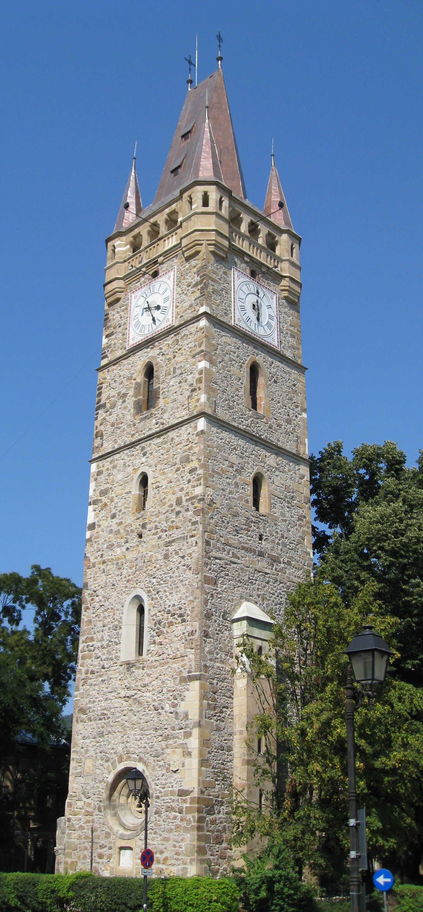
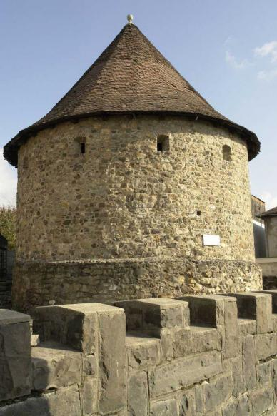
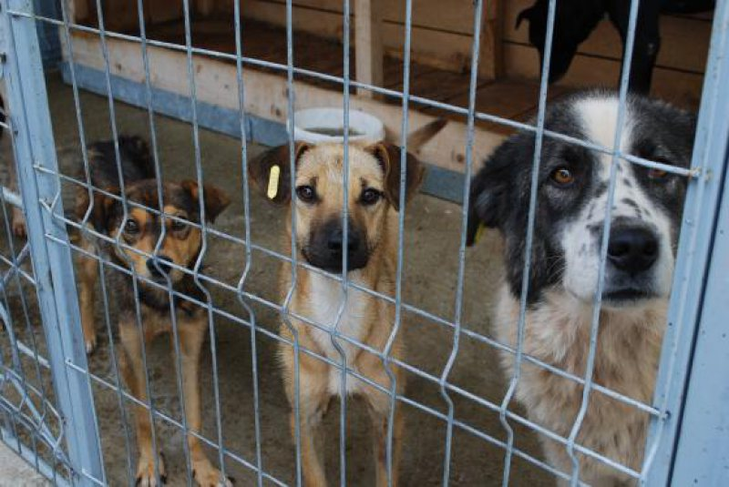
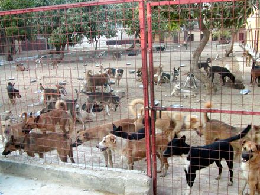
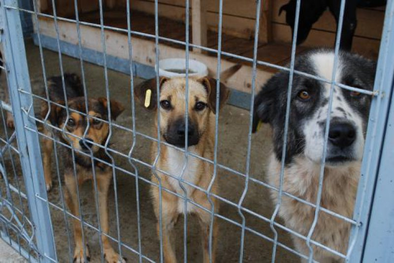
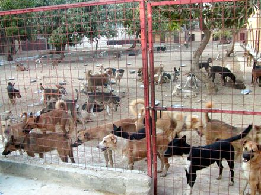

.png) Baia Mare
Baia Mare
Baia Mare
Baia Mare (în maghiară Nagybánya, în germană Frauenbach) este municipiul de reședință al județului Maramureș, Transilvania, România, format din localitățile componente Baia Mare (reședința), Blidari, Firiza și Valea Neagră. Orașul este situat în depresiunea Baia Mare, pe cursul mijlociu al râului Săsar, la poalele Munților Gutâi.
Cele mai importante centre miniere ale județului Maramureș sunt localizate în teritoriile ce înconjoară orașul Baia Mare. Regiunea este cunoscută nu doar pentru bogățiile subterane, ci și pentru împrejurimile care conferă o frumusețe aparte locului.
Plasat în mijlocul cursului râului Săsar, într-o arie a unei depresiuni la înălțimea medie de 194 metri deasupra nivelului mării, orașul Baia Mare permite accesul către niște rute montane precum Ignișul (1307 m), Mogoșa (1246 m), Gutâi (1443 m), Creasta Cocoșului (1428 m), etc. Pe lângă importanța lor minieră, unele locuri precum, Izvoare și Mogoșa sunt cunoscute pentru potențialul lor turistic, atât vara cât și iarna.
Numele vechi al orașului este în latină Rivulus Dominarum, în germană Frauenbach, în maghiară Asszonypataka. Orașul a fost atestat documentar în anul 1329 și s-a dezvoltat ca un centru aurifer în secolele 14-15. În 1446 orașul devine proprietatea familiei lui Iancu de Hunedoara. În 1469, în timpul domniei regelui maghiar Matia Corvinul, orașul a fost fortificat. În 2015, Baia Mare a intrat în finala pentru titlul de Capitală Europeană a Culturii 2021, alături de Timișoara (oraș câștigător), București și Cluj. În prezent a intrat în finală și luptă pentru titlul de Capitală a Tineretului din România 2018-2019 împreună cu Iași și Satu Mare. Pe 11 noiembrie 2017 Baia Mare a câştigat titlul de Capitală a Tineretului din România 2018-2019, urmând să implementeze proiectul în perioada 2 mai 2018 - 1 mai 2019.
Etimologia numelui localității: din subst. baie „exploatare minieră subterană; mină, ocnă; (la pl.) stațiune balneară; golf, depresiune" (lat. *bannea sau magh. bánya) + adj. mare „întins, vast " (lat. mas, maris).
Baia Mare a apărut pe harta aşezărilor urbane ca urmare a activităţii de exploatare a minereurilor neferoase, primele informaţii certe cu privire la mineritul din zonă provenind din secolul XIV, chiar dacă începuturile medievale ale activităţilor de acest gen sunt mult mai timpurii, cel puţin din a doua jumătate a secolului XIII. Memoria comunitară consemnează ca primă carte de identitate a oraşului, documentul din 29 mai 1329 prin care regele Carol Robert (1301-1342) dăruia comitelui Corrardus, jude al oraşelor Baia Mare şi Baia Sprie, pădurea aflată între cele două aşezări pentru ca acest teritoriu să fie populat. Baia Mare apare aici sub denumirea civitas Rivuli Dominarum, judele Corrardus fiind același și pentru Mons Medius (Baia Sprie). Documentul din anul 1329 nu s-a păstrat, conţinutul său fiind rezumat într-un act din anul 1479.
Prima diplomă privilegială a oraşului, pe care o putem studia şi astăzi, datează din 20 septembrie 1347 şi a fost acordată de regele Ludovic I (1342-1382), la cererea judelui Martin, a parohului Ioan, magistrului Petru şi notarului Ulrich, juraţi din Baia Mare şi Săsar (Rivulo Dominarum et Zazar Bánya), având în vedere faptul că privilegiul anterior al oraşului a ars într-un incendiu. Prin acest nou privilegiu se stabilesc hotarele oraşului şi se acordă locuitorilor numeroase drepturi: libertatea de a-şi alege judele, juraţii şi parohul, dreptul de a judeca în interiorul oraşului „toate pricinile ce se ivesc între ei, deopotrivă cele mari ca şi cele mici”, asigurarea libertăţilor individuale, libertatea vămii, dreptul unui târg pe an, timp de cincisprezece zile „fără contenire”, dreptul de desfacere liberă a vinului, dreptul de a se fortifica cu ziduri „împotriva năvalei duşmanilor”. O categorie distinctă de prevederi vizează organizarea mineritului, precizându-se ca, anual, să se aleagă un jude al minerilor care să supravegheze împreună cu judele oraşului şi cu juraţii, activitatea desfăşurată în mine şi să exercite dreptul de judecată în problemele legate de minerit. Deasemenea, judele şi juraţii alegeau supraveghetorii minelor, care trebuiau „să cerceteze toate hrubele şi lucrările de mină şi să se îngrijească de venitul urburei” cuvenite regelui.
Toate acestea denotă faptul că la mijlocul secolului XIV Baia Mare era un oraş structurat şi bine organizat, cu libertăţi specifice unui oraş liber regal care beneficia de o autonomie ridicată în raport cu instituţia comitatului de la Satu Mare, situaţia menţinându-se pe parcursul secolelor, până în anul 1876. Documentele relevă şi diversele denumiri ale oraşului Baia Mare în cursul devenirii sale: civitas, castrum sau castellum Rivuli Dominarum, Asszonypataka, Bagna, Nagibánya, Nagybánya sau Frauenbach, Neustadt, Welka-Bánya. În anul 1411 este atestată existenţa Monetăriei la Baia Mare, ale cărei începuturi sunt mai timpurii, probabil chiar din prima jumătate a secolului XIV. Aceasta s-a impus ca principala monetărie din Transilvania şi Ungaria, în 1463 realizând un venit net de 20.000 florini anual, comparativ cu cele din Buda (8.000 florini anual) sau Sibiu (6.000 florini anual). Mijlocul secolului XV înseamnă întrarea oraşului în posesia şi sfera de influenţă a puternicei familii a Huniazilor, fapt benefic pentru dezvoltarea sa economică şi edilitară. Reînnoirea şi lărgirea vechilor privilegii, sprijinirea mineritului şi a monetăriei, prin deschiderea de noi galerii şi prin aducerea de specialişti străini, construcţiile spectaculoase, ajunse până în zilele noastre ca moşteniri valoroase şi simboluri istorice şi arhitectonice, toate acestea au contribuit la configurarea identităţii unui oraş prosper, validat ca unul dintre cele mai dezvoltate centre miniere din regatul Ungariei.
Astfel, la 2 ianuarie 1445, Ioan de Hunedoara, voievod al Transilvaniei (1441-1446), guvernator al Ungariei (1446-1453), la cererea judelui şi juraţilor, dispune ca autorităţile din ţară să respecte privilegiile locuitorilor oraşului Baia Mare, mai ales cele privitoare la scutirea de vamă şi libera trecere a celor care călătoresc în problemele mineritului şi pentru procurarea de alimente. În anul 1446, Ioan de Hunedoara a vizitat oraşul şi a dispus construirea unui edificiu pentru soţia sa, cunoscut astăzi sub numele de Casa Elisabeta, precum şi a turnului – clopotniţă pentru impunătoarea biserică „Sfântul Ştefan”, care era deja ridicată din anul 1376. Finalizat de către fiul său, regele Matia Corvin (1458-1490), acesta constituie astăzi un autentic simbol istoric şi arhitectural al oraşului. Turnul Sf. Ştefan sau „turnul mare” era şi un loc ideal pentru observarea atentă a oraşului, respectiv a împrejurimilor, iar din primele decenii ale secolului XVII, funcţionalitatea şi utilitatea acestuia se amplifică prin montarea primului orologiu (1628).
Un alt element de civilizaţie urbană care merită amintit este faptul că, printr-o diplomă emisă la 7 mai 1472, regele Matia permite oraşului să perceapă vamă pentru căruţele care intră la târgul săptămânal din oraş, cu dreptul de a folosi acest venit pentru pavarea şi curăţirea străzilor. În sfera economică, regele a fost preocupat de organizarea activităţilor miniere şi sporirea producţiei de metale preţioase, întărind la 12 mai 1458 privilegiile anterioare ale oraşului. În plan juridic, un privilegiu important l-a constituit acordarea puterii de judecată deplină oraşului, prin exercitarea dreptului de a pedepsi cu moartea – „ius gladii”, la 25 iunie 1484. Între alte privilegii, important prin conţinut este şi cel din 9 noiembrie 1469 prin care regele Matia Corvin acorda oraşului, la cererea judelui, dreptul de a se înconjura cu zid împotriva repetatelor atacuri din afară, venite din partea românilor din Moldova („valahorum Moldavensis”). Vechiul sistem de apărare, format din valuri de pământ şi palănci (întărituri din trunchiuri de copaci aşezaţi orizontal) a fost înlocuit cu o centură de zid construit de către localnici, din piatră şi cărămidă, întrerupte din loc în loc de turnuri (bastioane) puternice.
Din sistemul de fortificaţii ale oraşului, astăzi poate fi văzut şi vizitat Turnul Măcelarilor, ridicat în jurul anului 1500, cunoscut şi sub numele de Bastionul de Muniţii, deoarece în încăperea boltită aflată la primul nivel s-a depozitat, într-o anumită perioadă, muniţia necesară pentru apărare. Accesul în interiorul oraşului se realiza prin mai multe porţi de intrare, cele mai importante fiind: Poarta Maghiară (Poarta de Sud), construită după anul 1500, în zona Pieţei Izvoarelor de azi, respectiv Poarta Podului (Poarta de Nord), localizată la capătul străzii Podul Viilor. Acestora li se adăugau o poartă situată în est, pe actuala stradă Vasile Lucaciu, şi una înspre vest, în zona actualului Colegiu Naţional „Gheorghe Şincai”. Hotarele oraşului se întindeau, conform diplomei de la 1347, confirmată inclusiv de regele Matia la 1476, dincolo de sistemul de apărare amintit, cuprinzând domeniul oraşului. Pe lângă minerit, ca activitate determinantă, la Baia Mare este atestată documentar, pentru secolele XIV-XVIII, existenţa unui număr însemnat de meşteşugari, independenţi sau organizaţi în bresle: aurari, argintari, măcelari, dogari, croitori, brutari, blănari, cizmari etc. Organizarea în bresle s-a păstrat până în a doua jumătate a secolului XIX, în anul 1872 constituindu-se asociaţii „industriale”. Piaţa oraşului (Circulus Fori) servea de târg şi piaţă, aici desfăşurându-se şi târgul anual, Baia Mare având dreptul, prin diploma din anul 1437, de a organiza „un iarmaroc şi târg de an” care să înceapă în duminica dinainte de 16 octombrie (sărbătoarea „fericitului Gall mărturisitorul”) şi „să ţină fără contenire cincisprezece zile”.
După formarea Principatului autonom al Transilvaniei (1541) oraşul Baia Mare, minele şi monetăria au ajuns în proprietatea principilor ardeleni, care au introdus metoda arendării minelor, atât unor particulari, precum familiile Herberstein sau Lisibona, dar şi oraşului, rezultatele fiind mai degrabă negative. În plan educaţional, secolul XVI a adus, pe fondul izbânzii Reformei, înfiinţarea primei şcoli medii superioare, Schola Rivulina (1547), a cărei istorie este legată de destinul confesiunii protestante din oraş. Intrarea zonei Baia Mare sub jurisdicţie austriacă (1694) a determinat modificări în plan administrativ, Diploma Leopoldină din anul 1691 consfinţind trecerea oraşului în „Partium” şi în adminstrarea regilor Ungariei. Noul regim s-a instaurat cu dificultate, cauze multiple favorizând instabilitatea socială, pe fondul crizei politice şi economice. În contextul răscoalei antihabsburgice condusă de principele Francisc Rákóczi al II-lea (1703-1711), Baia Mare a devenit teatrul de desfăşurare al unor operaţiuni militare, în cursul cărora haiducul Grigore Pintea (Viteazul), devenit comandant în oastea lui Rákóczi şi-a găsit sfârşitul în zona Porţii de Sud, fapt consemnat în protocolul de şedinţă al magistratului în 14 august 1703.
Mijlocul secolului XVIII aduce mutaţii semnificative în ceea ce priveşte organizarea sistemului minier, prin înfiinţarea la Baia Mare a Inspectoratului superior minier (Inspectorat Oberamt), subordonat direct erariului regal. Noua instituţie avea atribuţii organizaţionale, judiciare şi financiare, pentru exercitarea cărora au fost create oficii miniere şi oficii de topitorie, precum şi judecătorii miniere, transformate ulterior (1788) în tribunale miniere districtuale. Jurisdicţia celui de la Baia Mare se întindea asupra unui număr de 6 comitate din Ungaria şi asupra Districtului Chioarului. Pentru a fi concentrate toate serviciile tehnice şi administrative, între anii 1734-1739 a fost construită o clădire destinată Inspectoratului superior minier, în care a funcţionat şi Monetăria (Műnz Amt). Edificiul a fost considerabil mărit în anul 1782, luând forma şi proporţiile pe care le păstrează şi astăzi, aici fiind sediul Muzeului Judeţean de Istorie şi Arheologie Maramureş.
O conscriere a impunerilor de la sfârşitul secolului XVIII (1790) ne oferă o imagine de ansamblu asupra oraşului, consemnând existenţa unui număr de 3.580 locuitori şi a 705 case. A doua jumătate a secolului XVIII înseamnă apariţia unei problematici noi care, deşi cantonată iniţial pe palier ecleziastic, va pune în discuţie întregul sistem comunitar băimărean. În această perioadă, românii de confesiune greco-catolică încep seria demersurilor care vizau obţinerea unui lot de pământ necesar construcţiei unei biserici proprii. Într-o ecuaţie complicată, în care nu au lipsit idiosincraziile „celor vechi” faţă de cei care ameninţau să se insinueze într-o solidaritate forjată prin tradiţie, actorii au fost nu doar credincioşii români şi conducerea oraşului, ci şi forurile guvernamentale şi ecleziastice superioare. Intervenţia suveranei Maria Tereza (1717-1780) a fost decisivă, aceasta dispunând în 1767 acordarea unui lot necesar construirii bisericii şi şcolii românilor în suburbiile oraşului Baia Mare. Peste un an, conducerea urbei a pus la dispoziţia uniţilor un teren situat în partea răsăriteană a oraşului, imediat dincolo de zidul de apărare, mai exact între acesta şi strada Baia Sprie. Terenul se învecina la est cu grădina aflată în posesia Monetăriei, la sud cu calea („via”) „Curuli”, la vest cu zidul oraşului. Înălţarea bisericii româneşti a început în anul 1771, iar conscripţia ecleziastică din 1787 a consemnat în contul greco-catolicilor din Baia Mare o biserică de zid, un paroh şi 1114 suflete.
Structura demografică şi confesională a oraşului s-a schimbat spectaculos în a doua jumătate a secolului XVIII, societatea începând să iasă năvalnic din tiparele medievale. Din punct de vedere edilitar şi celelalte confesiuni şi-au edificat noi biserici. Astfel, între anii 1717-1720 s-a construit Biserica romano-catolică „Sf. Treime”, lăcaş de cult deţinut de iezuiţi până la desfiinţarea ordinului, în 1773, când a devenit biserică parohială. O altă construcţie impozantă este Biserica reformată de pe actuala stradă Podul Viilor, construită între anii 1792-1809 (turnul fiind terminat în anul 1836) şi considerată un valoros monument de stil neoclasicist.
Secolul XIX accentuează tendinţele de urbanizare şi modernizare, documentele relevând că, din punct de vedere demografic, populaţia oraşului a crescut constant, de la 3.744 locuitori în 1820 la 9.089 în 1896. Din punct de vedere organizaţional, locul Inspectoratului superior minier a fost luat, în a doua jumătate a secolului XIX de către Direcţia minelor din Baia Mare, cu atribuţii extinse care au propulsat-o ca a doua instituţie de acest gen din Ungaria. Sfârşitul secolului XIX a adus noi elemente de identitate pentru Baia Mare care a început să se afirme ca un centru artistic european, întemeiat pe fundamentele unei structuri educaţionale instituţionalizate, respectiv Şcoala particulară de pictură Simon Hollósy (1896-1901). Centrul artistic Baia Mare funcţionează neîntrerupt din anul 1896, asigurând oraşului un loc şi un rol bine definite pe harta artei plastice din România şi din Europa. Aceleaşi perioade îi aparţine şi Asociaţia muzeală băimăreană, înfiinţată la 31 august 1899 prin eforturile istoricului Gyula Schönherr şi care a reuşit să atragă în sprijinul ideii de înfiinţare a muzeului oraşului atât intelectualii cât şi autorităţile locale, instituţia muzeală deschizându-şi porţile la 19 iunie 1904.
Începutul secolului XX continuă seria realizărilor urbanistice, în anul 1910 inaugurându-se Hotelul Ştefan, edificiu impunător ridicat pe locul construcţiei având aceeaşi utilitate, dar care fusese afectată de un incendiu puternic în anul 1905. În 1911 s-a dat în folosinţă clădirea nouă a Şcolii de Pictură, fenomenul artistic de la Baia Mare înregistrând, până după cel de-al Doilea Război Mondial, mai multe substructuri ale educaţiei artistice: Şcoala Hollósy (1896-1901), Şcoala Liberă de Pictură (1902-1927), Şcoala de Arte Frumoase (1927-1935 şi 1940-1950). Parcul oraşului s-a conturat pe locul grădinii publice amenajată în perioada 1840-1890, devenind un motiv de mândrie pentru localnici, dar şi de apreciere pentru oaspeţii oraşului. Unirea din 1918 şi instaurarea administraţiei româneşti au determinat modificări structurale, în consonanţă cu evoluţia societăţii româneşti. Astfel, Direcţia minelor şi uzinelor metalurgice Baia Mare a preluat toate proprietăţile fostei structuri existentă anterior, coordonând exploatările miniere din zonă (Valea Roşie, Dealul Crucii, Baia Sprie, Cavnic, Băiuţ), dar şi pe cele din Rodna Veche, Roşia Montana şi Săcărâmb, precum şi Uzinele metalurgice Firiza de Jos şi Zlatna. Pe lângă aceste mine ale statului au funcţionat şi societăţi miniere particulare, multe cu capital străin.
Realităţile economice nu păreau să fi fost într-o contradicţie fundamentală cu mediul înconjurător, de vreme ce, la data de 16 iunie 1930 Baia Mare a fost declarată staţiune climatică, situaţie care a adus beneficii zonei pe parcursul deceniului 4. Parcul central, redenumit „Regina Maria” constituia un element important al staţiunii, căruia i se adăugau şi altele, precum Colonia de Pictură, Sanatoriul Wagner şi Hotelul Ştefan, loc în care se desfăşurau atât reprezentaţii teatrale, cât şi expoziţii ale pictorilor care promovau frumuseţile oraşului şi ale zonei adiacente. Piaţa din centrul vechi, în care se desfăşurau tradiţionalele târguri, a fost înlocuită, în anii 1933 – 1934, cu un parc bine îngrijit, toate aceste realităţi contribuind la definirea oraşului Baia Mare ca o aşezare urbană cochetă şi liniştită, în pofida dezvoltării activităţilor de extracţie şi de prelucrare a minereurilor neferoase, comparativ cu perioada anterioară. Bazată pe aceste atuuri, elita băimăreană a iniţiat demersuri pentru validarea oraşului şi din perspectivă administrativă, Baia Mare devenind reşedinţa judeţului Satu Mare pentru o scurtă perioadă (1926). Eşecul i-a determinat pe lideri să se orienteze spre alte proiecte astfel că la 5 iunie 1930 Baia Mare a devenit reşedinţa Episcopiei Greco-Catolice a Maramureşului, structură ecleziastică înfiinţată prin Concordatul semnat în 1927 între Sf. Scaun şi Regatul României, jurisdicţia sa întinzându-se asupra judeţelor Maramureş, Satu Mare şi a unei părţi din Sălaj. Catedrala noii episcopii a devenit biserica edificată în perioada 1905-1910, situată pe actuala stradă Vasile Lucaciu, care înlocuia prima biserică românească (1771), reşedinţa episcopală fiind în localul fostei Şcoli civile de fete, construit în anul 1892.
Această configurare instituţională a adus prestigiu social oraşului, definindu-l ca un pol urban dinamic, având funcţiuni bine articulate de ordin economic, ecleziastic, cultural şi turistic. Avatarurile celui de-al doilea război mondial şi ale perioadei ocupaţiei (1940-1944) au marcat profund comunitatea băimăreană, însă pentru proiectele regimului comunist oraşul Baia Mare devenise interesant din perspectivă politică, economică şi administrativă. Astfel, localitatea a cunoscut un ritm accentuat de dezvoltare, mineritul şi metalurgia predominând în raport cu celelalte ramuri industriale. Această componentă a fost dublată de cea administrativă, oraşul devenind reşedinţa regiunii Baia Mare (1950), denumită ulterior Maramureş, iar în anul 1968 al judeţului Maramureş. Dezvoltarea economică, edilitară, educaţională, creşterea demografică au fost exponenţiale. Astfel, dacă în anul 1930 Baia Mare avea aproape 14.000 de locuitori, în 1977 numărul acestora trecea de 100.000. Realizările industriale şi urbane au fost dublate însă, cu precădere în ultimii ani ai regimului comunist, de o altă realitate care, treptat, a devenit nu doar diferită, ci şi opusă celei oficiale, cultivată de propaganda comunistă. Cenuşiul a început să predomine nu doar la nivelul imaginii de ansamblu, ci şi la cel al existenţei cotidiene, atât de marcată de lipsuri. Activităţile industriei miniere şi metalurgice au avut, pe lângă beneficiile dezvoltării, efecte negative asupra sănătăţii oamenilor şi mediului.
Intrarea „cetăţii” în „zodia libertăţii”, după evenimentele din 1989, cu plusurile şi minusurile susceptibile a fi identificate, denotă intenţia comunităţii băimărene de a-şi afirma valorile tradiţionale în consonanţă cu tendinţele majore ale epocii actuale.
Cele mai vechi așezări în zonă datează din perioada paleoliticului superior. De regulă, plasarea istorică a orașului Baia Mare este accentuată ca aparținând Epocii Bronzului, dovezile fiind niște depozite de obiecte fabricate din aur și bronz, precum și referințe din literatura secundă a sfârșitului secolului al 19-lea sau începutul secolului 20, făcându-se trimiteri la minele romane din această zonă.
Orașul Baia Mare este menționat pentru prima dată în 1142, perioada regelui Geza al II-lea, sub numele de Asszonypataka - Frauenbach.
Localitatea este atestată documentar pentru prima oară în 1347, ca și Râul Doamnelor, (Rivulus Dominarum) într-un act al cancelariei regelui Carol Robert. Una din cele mai timpurii mărturii scrise care s-au păstrat, privind importanța minelor din Baia Mare și Săsar (maghiară Zazurbanya, inclusă acum în Baia Mare) datează din prima jumătate a secolului al 14-lea. Act eliberat de cancelaria regelui Ludovic I de Anjou la data de 20 septembrie 1347, acesta cuprinde o serie de privilegii acordate acestor centre miniere și locuitorilor săi de către rege, orașul Baia Mare fiind deja un oraș liber regal.[7] Anul 1376 reprezintă anul în care apare un al doilea document privilegial, iar acesta din urmă are ca și efect reglementarea mineritului.
Ca și recompensă pentru lupta dusă de Ioan de Hunedoara împotriva turcilor, regiunea Băii Mari a trecut în anul 1446 în proprietatea lui. El va dispune ridicarea Catedralei Sfântul Ștefan, din care în prezent se mai păstrează doar Turnul Ștefan.
În 1469 regele Matia Corvin a acordat localității dreptul de a se înconjura cu ziduri de apărare, astfel fiind construită cetatea medievală a Băii Mari. Cu toate acestea în 1490 Baia Mare a fost ocupată de trupele poloneze ale prințului Ioan Albert. Din 1526 Baia Mare a trecut prin mai multe schimbări ale proprietarilor, începând cu principele Ioan Zápolya. Tot în această perioadă, în 1547, a luat naștere "Schola Rivulina", sub îndrumarea Bisericii Reformate, școală care a pregătit viitoare fețe bisericești și funcționari administrativi.
Orașul a cunoscut tumulturile războiului curuților. În 1703 a scăpat pentru scurt timp de sub controlul Imperiului Austriac, atunci când Pintea Viteazul a participat cu trupele sale, alături de Francisc Rakoczi al II-lea, la preluarea orașului.
Din 1889 datează prima publicație în limba română, "Gutinul", săptămânal socio-literar și economic.
În 2000 în apropiere de Baia Mare s-a produs unul dintre cele mai mari accidente ecologice din România: scurgerea de cianuri de la societatea Aurul, o firmă privată care activa în domeniul reprocesării vechilor halde de steril rezultate în urma activităților miniere din zonă vechi de secole pentru a extrage aur din acestea.
Municipiul Baia Mare este situat în partea vestică a județului Maramureș, în depresiunea cu același nume, pe cursul mijlociu al râului Săsar, la o altitudine medie de 228 m față de nivelul mării, fiind cuprins de coordonatele geografice 47°39' - 47°48' latitudine nordică și 23°10' - 23°30' longitudine estică.
Structura acestui municipiu este alcătuită și din localitățile Blidari, Firiza, Valea Neagră, Valea Borcutului, însumând astfel o suprafata de 23.471 ha. La nord se învecinează cu Munții Igniș și Gutâi, la sud cu localitățile Recea și Groși, la est cu orașul Baia Sprie și la vest cu orașul Tăuții Măgherăuș.
Suprafața teritoriului administrativ însumeaza 23.573 ha din care 3.170 ha sunt terenuri agricole, 18.599 ha - terenuri silvice, cu preponderență păduri, și 1.804 ha - construcții și alte destinații.
Relieful depresiunii, format din câteva terase ale Someșului, Lapusului si Sasarului, are aspectul unui amfiteatru cu larga deschidere spre vest, iar la nord si est se ridica Muntii Ignis si Gutâi, cu spinari rotunjite, acoperiti cu paduri si platouri bogate în pasuni. Dintre munceii care salta brusc deasupra depresiunii se remarca Dealul Murgau (633m), Dealul Florilor (367m), Dealul Crucii (501m), Piatra Bulzului, Rotunda, Pleasca Mare, Ignis (1307m), Iezurele s.a.
Lantul muntilor Gutâi formeaza o unitate geomorfologica mai aparte, cu roci eruptive, care pun în evidenta piscurile Mogosa (1.246m), Gutâi (1.443m) si Creasta Cocosului (1.428m). Aceasta din urma este o ramasita dintr-un vechi crater vulcanic, cu stânci golase, dispuse sub forma de falii verticale ca o fortareata ciudata, cu pereti prapastiosi, fapt ce constituie un obiectiv de mare interes pentru turisti.
Scoarta terestra din zona municipiului cuprinde o structura pedogenetica variata, caci alaturi de solurile podzolice predominante se gasesc soluri pseudogleice si aluviale specifice zonei depresionare, precum si soluri brune de padure, soluri montane acide, etc.
Rețeaua hidrografică este formată, în principal, din râul Săsar, lung de 31,6 km, care străbate orașul de la est la vest colectând apele râurilor Chiuzbaia și Firiza, și a pârâurilor Sf. Ioan, Usturoiul, Valea Roșie și Borcut. Pe râul Firiza, la 5 km distanță de centrul orașului, s-a construit Barajul Strâmtori-Firiza (52 m înălțime) prin care s-a creat un lac de acumulare în suprafață de 110 ha ce asigură necesarul de apă potabilă a municipiului. La aceasta se adaugă Lacul Bodi Ferneziu și Lacul Bodi Baia Sprie (numit și Lacul Mogoșa sau Lacul Pintea Viteazul), create prin baraje artificiale în secolul al XVIII-lea. Ele constituie îndrăgite locuri de agrement. Trebuie amintită aici existența unor izvoare de apa minerală pe Valea Borcutului, Valea Usturoi și Firiza.
Din zona municipiului Baia Mare are unele caracteristici specifice, mai aparte, datorita existentei lantului carpatic ce îndeplineste rolul benefic de paravan, împiedicând intemperiile reci dinspre nord-est. Aflata la adapost, depresiunea are un climat de nuanta mediteraneana, cu ierni blânde, fara mari viscole, cu veri racoroase, prelungite si un echilibru atmosferic favorabil. Temperatura aerului atinge cota medie, multianuala de 9,6 °C. Media lunii ianuarie se ridica la -2.4 °C, iar a lunii iunie la 19,9 °C. Precipitatiile atmosferice sunt în general constante, totalizând o medie anuala de 976 mm. Vânturile nu prezinta caracteristici deosebite. Datorita imobilizarii maselor de aer în depresiune, se înregistreaza perioade lungi de calm atmosferic, fapt ce influeteaza negativ starea de poluare a orasului.
Vegetatia cuprinde o gama variata de specii ierboase si arborescente, în functie de varietatea terenului, a solului si a climei. Padurile ocupa 80% din suprafata localitatii. Depresiunea Baia Mare face parte din arsenalul padurilor de foiase (fag, carpen, stejar) - astazi în mare parte defrisate si înlocuite de culturi agricole si pajisti secundare. Etajul padurilor de foioase se întinde pe altitudini cuprinse între 300 si 1200 m, formând un brâu verde în jurul orasului. Pe rama depresiunii Baia Mare predomina padurile de gorun în amestec cu carpen. Padurile de fag si carpen ocupa versantii vestici si sudici ai muntilor Gutin. Specifice Depresiunii Baia Mare sunt suprafetele întinse ocupate de castanul comestibil care urca si pe versantii cu expozitie sudica si vestica pâna la altitudini de 600 m. Padurile de castani de la Baia Mare formeaza cea mai mare suprafata împadurita cu aceasta specie din România. Aici castanul comestibil este perfect aclimatizat, vegetând ca specie care se regenereaza pe cale naturala, preferând solurile montane acide, cu drenaj bun si evitând solurile podzolice pseudogleizate si cu drenaj slab. Trecerea de la padure spre pasune sau teren cultivat este de obicei de o liziera de arbust alcatuita din specii ca alunul, socul, cornul, calinul, sângerul, lemnul câinesc.
Fauna din spatiul geografic baimarean cuprinde aproape toate speciile cunoscute din zona carpatica, valoroase cinegetic: cerbul, capriorul, lupul, vulpea, iepurele, jderul, veverita. Aceste specii sunt frecvente în zona pasunilor montane alpine. Pasarile sunt bine reprezentate mai ales în locurile unde predomina padurea de fag, mai bine conservata în ciuda defrisarilor masive, prin: ierunca, porumbel de scorbura, huhurezu mare, uliu porumbar, bufnita, soimul. În apele de munte traieste: lostrita, pastravul, scobarul si stiuca; iar în apele de ses se întâlnesc cleanul dungat si babetele.
Conform recensământului efectuat în 2011, populația municipiului Baia Mare se ridică la 123.738 de locuitori, în scădere față de recensământul anterior din 2002, când se înregistraseră 137.921 de locuitori.[1] Majoritatea locuitorilor sunt români (77,67%). Principalele minorități sunt cele de maghiari (10,3%) și romi (2,51%). Pentru 9,04% din populație nu este cunoscută apartenența etnică.[2] Din punct de vedere confesional majoritatea locuitorilor sunt ortodocși (67,19%), dar există și minorități de romano-catolici (7,19%), reformați (5,18%), greco-catolici (4,52%), penticostali (3,59%) și martori ai lui Iehova (1,14%). Pentru 9,54% din populație nu este cunoscută apartenența confesională.[8]
Un eveniment de amploare organizat anual în Baia Mare este Sărbătoarea Castanelor (sărbătoarea orașului). Prima ediție s-a desfășurat în anul 1993. Din 2015 printr-o hotărâre a Consiliului Local la inițiativa primarului Cătălin Cherecheş a devenit Festivalul Castanelor, iar locațiile unde se desfăşoară evenimentul fiind Bulevardul Unirii (unde se amplasează scena principală, pe care deja au concertat artişti de renume internațional spre exemplu Culture Beat, Sabrina, Dr. Alban, Tinie Tempah etc) şi scena 2 fiind scena amplasată în Centrul Vechi (Piața Libertății) al oraşului unde se organizează concerte de operă, muzică clasică, populară, uşoară, modernă, folk sau rock. În 2017 pe scena din Centrul Vechi a concertat în cadrul Festivalului Castanelor Thomas Anders&Modern Talking Band.
„Expo-flora” — expoziție de aranjamente florale. Primele ediții s-au desfășurat în incinta Casei Tineretului; după 2008, tradiționala manifestare a avut loc în Pavilionul Muzeului de Etnografie și Artă Populară (clădirea fostului Teatru de vară), iar în prezent Expo-Flora se desfăşoară în Piața Revoluției. Evenimentul fiind organizat de SPAU Baia Mare.
În fiecare an în septembrie este organizat Festivalul Centrul Vechi, sau după cum este mai cunoscut, Főtér Fesztivál. Este un festival organizat de tineretul maghiar din municipiu.
Începând cu stagiunea 2005/2006, în Baia Mare se organizează anual Festivalul Internațional de Teatru Atelier (director Radu Macrinici). Primele treisprezece ediții ale Festivalului s-au desfășurat în orașele Sf. Gheorghe și Sighișoara.
„Ziua Artistului Plastic” — o manifestare elevată, menită să omagieze breasla artiștilor contemporani se desfășoară anual, în data de 5 mai. La fiecare ediție a Anualei Artelor participă cu lucrări reprezentative (selectate de organizatori, Filiala Baia Mare a UAPR) artiști consacrați, debutanți, precum și invitați străini.
Tot în Baia Mare se desfășoară Festivalul național de muzică pentru copii „Ursulețul de aur” (inițiator și organizator: Doina Bentu) — prima ediție: 1983.
O tradiție în Baia Mare o reprezintă şi Târgul de Crăciun care cuprinde o multitudine de evenimente culturale la scena amplasată în Piața Libertății, alături de un imens brad de Crăciun dar şi un frumos patinoar.
 Începând din secolul XIX şi în secolul XX în Europa au existat aproximativ 40 de Colonii artistice ca
de exemplu cele de la Barbizon şi Pont - Aven - Franta, St. Ives - Anglia, Lare - Olanda, Skagen - Danemarca,
Worpswede, Darmstadt - Germania, Ascona - Elveţia sau Szolnok în Ungaria.
Începând din secolul XIX şi în secolul XX în Europa au existat aproximativ 40 de Colonii artistice ca
de exemplu cele de la Barbizon şi Pont - Aven - Franta, St. Ives - Anglia, Lare - Olanda, Skagen - Danemarca,
Worpswede, Darmstadt - Germania, Ascona - Elveţia sau Szolnok în Ungaria.
Printre aceste colonii se numără şi Colonia de la Baia Mare întemeiată în 1896 - prin deschiderea "Şcolii particulare de pictură" condusă de Simion Hollosy (1857-1918), fapt ce s-a dovedit a fi un reuşit "transplant cultural", devenind una dintre cele mai reputate colonii europene şi printre puţinele în care viaţa artistică s-a desfăşurat neîntrerupt timp de mai bine de un secol. Pe parcursul existenţei sale în Colonia băimăreană au lucrat peste 3000 de artişti plastici din ţară cât şi din spaţiul central şi est european.
Muzeul de Artă din Baia Mare este singular în ţară, în sensul că expune exclusiv lucrări realizate de artişti care au lucrat efectiv în Colonia de la Baia Mare din 1896 până astăzi.
Clădirea care găzduieşte Muzeul de Artă, situată la circa 200 metri de vechiul centru al oraşului, este monument de arhitectură. Ridicată iniţial cu un singur nivel, datată din 1784 a avut menirea de a fi Oficiul Salinar din Maramureş, ulterior la începutul secolului XX ca proprietate a avocatului dr. Teogil Dragoş, a fost supraînălţată, la etaj fiind locuinţa acestuia.
Având un profil distinct, bine conturat ,Muzeul de Artă - Centrul Artistic Baia Mare, expune peste 250 lucrări semnate de 90 de plasticieni bine cunoscuţi pe plan naţional şi internaţional - încearcă să ilustreze complexul fenomen băimărean, ca experienţă artistică unică în felul său.
 Muzeul este locul în care comunitatea vine să se privească în oglindă. În alţi termeni, muzeul este
depozitarul istoriei noastre, fără de care o autobiografie comunitară nu ar fi posibilă.
Muzeul este locul în care comunitatea vine să se privească în oglindă. În alţi termeni, muzeul este
depozitarul istoriei noastre, fără de care o autobiografie comunitară nu ar fi posibilă.
Instituţia vă oferă posibilitatea de a cunoaşte aspecte ale trecutului comunităţilor din fostele “ţări” ale Maramureşului, Chioarului, Lăpuşului şi Codrului, atât prin intermediul expoziţiilor permanente şi temporare, cât şi prin cel al metodelor interactive ale programului de educaţie “Muzeul Viu”, adresat în special tinerilor.
Biblioteca muzeului, cu fondul documentar şi cel de carte curentă, vă stă la dispoziţie prin intermediul sălii de lectură, în timp ce rezultatele cercetărilor arheologice şi istorice pot fi cunoscute datorită publicaţiei “Marmaţia”.
 Muzeul funcționează în actuala clădire din 1971. Expoziția pavilionară de etnografie și artă populară
are trei părți distincte, în care sunt prezentate: ocupațiile tradiționale principale și secundare, meșteșuguri
și instalații tehnice, obiecte aparținând artei populare, ceramică, mobilier, obiecte de uz casnic, elemente
de arhitectură populară, port și textile de interior, din cele patru zone etnografice ale județului (Chioar,
Codru, Lăpuș, Maramureș). Muzeul Satului, inaugurat în 1984 în peisajul pitoresc de pe Dealul Florilor
(6 ha), cuprinde monumente din cele patru zone etnografice ale județului Maramureș grupate în jurul Bisericii
de lemn adusă din Chechiș.
Muzeul funcționează în actuala clădire din 1971. Expoziția pavilionară de etnografie și artă populară
are trei părți distincte, în care sunt prezentate: ocupațiile tradiționale principale și secundare, meșteșuguri
și instalații tehnice, obiecte aparținând artei populare, ceramică, mobilier, obiecte de uz casnic, elemente
de arhitectură populară, port și textile de interior, din cele patru zone etnografice ale județului (Chioar,
Codru, Lăpuș, Maramureș). Muzeul Satului, inaugurat în 1984 în peisajul pitoresc de pe Dealul Florilor
(6 ha), cuprinde monumente din cele patru zone etnografice ale județului Maramureș grupate în jurul Bisericii
de lemn adusă din Chechiș.
 Muzeul Satului din Baia Mare prezintă patru zone etnografice din nordul României, cunoscute de-a lungul
timpului ca ţări: Ţara Chioarului, Ţara Lăpuşului, Ţara Codrului şi Ţara Maramureşului. Fiecare dintre
acestea are un specific aparte bine subliniat de către unităţile de arhitectură pe care le prezintă.
În cadrul muzeului s-a încercat şi prezentarea tipurilor de gospodării în funcţie de ocupaţia principală
a locuitorilor din zona de provenienţă a gospodăriei. Astfel avem gospodării de agricultor din Tara Lăpuşului,
gospodărie de viticultor din subzona Baia Mare, gospodărie de pomicultor din Tara Maramureşului etc.
Nu au fost omise nici instalaţiile tehnice cum ar fi oloiniţele, pivele, vâltorile şi morile acţionate
de apă.
Muzeul Satului din Baia Mare prezintă patru zone etnografice din nordul României, cunoscute de-a lungul
timpului ca ţări: Ţara Chioarului, Ţara Lăpuşului, Ţara Codrului şi Ţara Maramureşului. Fiecare dintre
acestea are un specific aparte bine subliniat de către unităţile de arhitectură pe care le prezintă.
În cadrul muzeului s-a încercat şi prezentarea tipurilor de gospodării în funcţie de ocupaţia principală
a locuitorilor din zona de provenienţă a gospodăriei. Astfel avem gospodării de agricultor din Tara Lăpuşului,
gospodărie de viticultor din subzona Baia Mare, gospodărie de pomicultor din Tara Maramureşului etc.
Nu au fost omise nici instalaţiile tehnice cum ar fi oloiniţele, pivele, vâltorile şi morile acţionate
de apă.
 Muzeul găzduiește o expoziție desfășurată pe 900 mp, în care sunt expuse peste 1.000 de eșantioane minerale,
roci și fosile. În depozitele instituției se află alte 15.000 de piese. Muzeul de Mineralogie din Baia
Mare este cel mai mare muzeu regional din Europa, multe dintre exponate fiind considerate unicate mondiale
și valori de patrimoniu.
Muzeul găzduiește o expoziție desfășurată pe 900 mp, în care sunt expuse peste 1.000 de eșantioane minerale,
roci și fosile. În depozitele instituției se află alte 15.000 de piese. Muzeul de Mineralogie din Baia
Mare este cel mai mare muzeu regional din Europa, multe dintre exponate fiind considerate unicate mondiale
și valori de patrimoniu.
Denumirea neoficială, culturală prin excelență și unanim uzitată este Muzeul florilor de mină.„Floarea de mină este un eșantion mineral recoltat din subteran, monomineral sau format din mai multe minerale, posedând calități estetice deosebite datorită: concreșterii cristalelor, culorii, formelor, dimensiunilor de excepție ale unor cristale componente, care în totalitate fac ca piesa să fie bine individualizată față de celelalte” (Victor Gorduza - directorul instituției).
La parter, expoziția de bază prezintă alcătuirea geologică a Nord-Vestului României, sistematica mineralelor hidrotermale și zăcămintele de metale neferoase de pe rama sudică a munților Oaș-Gutâi, precum și din Țibleș și zona Borșa-Vișeu.
La etaj, spațiul expozițional cuprinde piesele cele mai impresionante, pline de poezie și culoare, învăluite într-o muzică de ambianță ce creează un sincretism imagine-melos propice desfășurării unor acțiuni culturale de înaltă ținută - aici se desfășoară anual manifestarea de decernare a premiilor „Cărțile Anului”, organizată de filiala județeană a Uniunii Scriitorilor din România.
 Ideea unei colecţii private de artă care să fie prezentată publicului este una nonconformistă şi a vizat
achiziţia a numeroase creaţii –, pornind de la cele ce ţin de cultura clasică, şi ajungând până la cele
moderne.
Ideea unei colecţii private de artă care să fie prezentată publicului este una nonconformistă şi a vizat
achiziţia a numeroase creaţii –, pornind de la cele ce ţin de cultura clasică, şi ajungând până la cele
moderne.
Totul a început în urma cu aproximativ 11 ani, iar pe parcurs s-au strâns nenumărate obiecte de artă. Vizitatorii vor găsi picturi fascinante, fotografii nonconformiste, gravuri, sculpturi, dar şi lucrări grafitti. Muzeul Florean îmbină toate tipurile de creaţii culturale, inclusiv muzica.
O activitate foarte importantă a acestui muzeu se axeaza pe promovarea tinerelor talente, lucrările acestora fiind promovate atât în spaţiile expoziţionale ale instituţiei, cât şi pe paginile WEB de profil.
 Una dintre cele mai vechi monetarii de pe teritoriul Transilvaniei a functionat la Baia Mare. Existenta
din belsug a materiilor prime (aur si argint) si acordarea unor largi privilegii oraselor miniere au
creat conditiile favorabile pentru functionarea in acest oras a unei monetarii, atestata documentar in
secolul al XIV-lea. Monetaria din Baia Mare isi avea sediul pe malul Sasarului, in cladiri care astazi
gazduiesc Muzeul Judetean. Dintre cele patru monetarii care existau la mijlocul secolului al XV-lea in
Transilvania sI Ungaria, cea din Baia Mare realiza cel mai mare venit net, 20.000 de florini de aur anual,
in timp ce monetaria din Sibiu realiza 6.000 de florini, iar cea de la Buda 8.000 de florini.
Una dintre cele mai vechi monetarii de pe teritoriul Transilvaniei a functionat la Baia Mare. Existenta
din belsug a materiilor prime (aur si argint) si acordarea unor largi privilegii oraselor miniere au
creat conditiile favorabile pentru functionarea in acest oras a unei monetarii, atestata documentar in
secolul al XIV-lea. Monetaria din Baia Mare isi avea sediul pe malul Sasarului, in cladiri care astazi
gazduiesc Muzeul Judetean. Dintre cele patru monetarii care existau la mijlocul secolului al XV-lea in
Transilvania sI Ungaria, cea din Baia Mare realiza cel mai mare venit net, 20.000 de florini de aur anual,
in timp ce monetaria din Sibiu realiza 6.000 de florini, iar cea de la Buda 8.000 de florini.
 În Baia Mare, prima trupă de teatru (semiprofesionistă) s-a înființat în anul 1796, sub directoratul
lui János Nagy. La data de 30 decembrie 1952, se înființează un Teatru de Stat (denumit ulterior „Dramatic”,
iar în prezent „Municipal”) cu sediul inițial în sala cinematografului „Popular”. La inaugurare, a avut
loc premiera spectacolului Crângul de mălini de Al. Korneiciuk, în regia lui Octavian Rappaport. De atunci
și până în prezent s-au jucat peste 350 de premiere și mii de spectacole.
În Baia Mare, prima trupă de teatru (semiprofesionistă) s-a înființat în anul 1796, sub directoratul
lui János Nagy. La data de 30 decembrie 1952, se înființează un Teatru de Stat (denumit ulterior „Dramatic”,
iar în prezent „Municipal”) cu sediul inițial în sala cinematografului „Popular”. La inaugurare, a avut
loc premiera spectacolului Crângul de mălini de Al. Korneiciuk, în regia lui Octavian Rappaport. De atunci
și până în prezent s-au jucat peste 350 de premiere și mii de spectacole.
Un moment de referință în istoria teatrului băimărean l-a reprezentat activitatea lui Mihai Dimiu (devenit ulterior regizor și profesor de teatru la IATC), care a alcătuit o trupă de actori extrem de valoroși: Coca Andronescu (în Hangița și Doamna ministru), Ștefan Mihăilescu-Brăila (în Tache, Ianke și Cadâr), Tănase Cazimir, Lulu Savu (membră a trupei lui Constantin Tănase și prima artistă emerită din trupa băimăreană), Ion Săsăran.
Turnul Ștefan este turnul-clopotniță al fostei biserici cu hramul "Sfântul Rege Ștefan din Baia Mare. Turnul este situat între străzile Crișan și 1 Mai, în imediata apropiere a Pieții Libertății - Piața Centrală (Circulus fori) - a vechiului oraș. A fost construit în secolul al XV-lea.
Prima atestare documentară a bisericii "Sfântul Ștefan" datează din 1347, însă construcția este inaugurată oficial abia în 1387. Turnul, construit din piatră masivă, a fost ridicat la inițiativa principelui Ioan de Hunedoara, pentru a marca victoria de la Ialomița (1442) împotriva otomanilor. Construcția turnului începe după anul 1446, însă este finalizată abia în 1468, sub domnia lui Matia Corvinul.
În 1619 se reface partea superioară, având forma unei piramide cu baza pătrată, cu patru turnulețe și este înzestrat cu clopote. Nouă ani mai târziu se montează un ceas cu lună. Afectate în repetate rânduri de trăsnete și incendii, cele două clădiri suferă mai multe reparații capitale, însă în 1763 se reface numai turnul. Cu acest prilej, se construiește pridvorul de la partea superioară.
Intrarea în turn se face prin ușa dinspre sud. Până la primul nivel se ajunge pe o scară de piatră în spirală. De aici până la foișor, accesul se face pe scări de lemn. Clădirea măsoară circa 50 de metri și, din pridvor, oferă o panoramă deosebită întregului oraș
Turnul a fost reabilitat în cadrul proiectului ”Reabilitarea și promovarea identităţii culturale şi istorice Piaţa Cetăţii – Turnul Ştefan”, derulat de Municipiul Baia Mare și finanțat prin Programul Operaţional Regional 2007-2013, Axa prioritară 1 ”Sprijinirea dezvoltării durabile a oraşelor – poli de creştere”.
 Planetariul Baia Mare a fost inaugurat la data de 1 iulie 1969, în Baia Mare, fiind primul planetariu
public din România şi unicul din Transilvania.
Planetariul Baia Mare a fost inaugurat la data de 1 iulie 1969, în Baia Mare, fiind primul planetariu
public din România şi unicul din Transilvania.
Deşi programul de execuţie al clădirii trebuia să aibă loc între anii 1967-1970, recepţia pentru planetariu s-a realizat de abia în vara anului 1969, iar cea pentru etapa a doua în anul 1973. Acesta a aparţinut până în luna ianuarie 1991 primăriei municipiului Baia Mare.
Holurile Complexului Astronomic, cu o suprafaţă de 120 m² gîzduiesc o expoziţie permanentă legată de mişcările aparente pe bolta cerească.
În anul 2006, „Planetariul Baia Mare” se desprinde de „Muzeul Judeţean Maramureş”, încadrându-se ca departament de specialitate al Muzeului de Mineralogie Baia Mare. Au fost iniţiate, de asemenea, ample lucrări de renovare a clădirii planetariului şi dotarea cu diverse facilităţi, precum şi cu un modern sistem de videoproiecţie, fiind renovată fosta cameră solară (transformată ulterior în sală multifuncţională, unde aveau loc diverse evenimente).
În anul 1469, 9 noiembrie, printr-un document privilegial regele Matia Corvin permite oraşului Baia Mare să ridice ziduri de piatră în scop de apărare, ziduri care erau străjuite de șapte turnuri.Bastionul Măcelarilor a făcut parte din această împrejmuire de piatră străjuind Poarta de Sud a cetăţii, una din cele patru porţi principale de intrare în oraş.
Conform documentelor existente în cadrul Arhivelor Naţionale Maramureş, acest bastion a fost ridicat undeva prin anul 1547, de către un anume Gaspar Dragyi, cu aprobarea regelui Matei Corvin. Zidurile au fost construite din piatră şi au o grosime de un metru de formă circulară cu două niveluri. Nivel 1 – spaţiu boltit care servea la depozitarea muniţiei, nivelul 2 – are spre exterior în zid goluri care serveau drept metereze.
Turnul Măcelarilor se mai numea şi al “Muniţiilor”, deoarece aici îşi ţineau soldaţii de la acea vreme armele şi praful de puşcă. Se numea al “măcelarilor” pentru că această breaslă avea îndatorirea să-l folosească pentru a apăra cetatea de eventualele atacuri străine. De fapt, trebuie menţionat faptul că breasla măcelarilor era cea mai mare şi puternică dintre toate celelalte existente la acea vreme în cetatea Băii Mari.
.jpg) În 1446, anul în care devine guvernator al Ungariei, Iancu de Hunedoara începe construcția unei case
pentru soția sa, Elisabeta. Casa urma să facă parte din castelul medieval din Baia Mare. Cu aproximativ
45 de ani mai târziu, construcția este finalizată de fiul acestuia Matei Corvin, care devine rege al
Ungariei.
În 1446, anul în care devine guvernator al Ungariei, Iancu de Hunedoara începe construcția unei case
pentru soția sa, Elisabeta. Casa urma să facă parte din castelul medieval din Baia Mare. Cu aproximativ
45 de ani mai târziu, construcția este finalizată de fiul acestuia Matei Corvin, care devine rege al
Ungariei.
După Marea Unire din 1918, Casa Iancu de Hunedoara intră în posesia statului. Când România a ieșit din comunism, după 1989, părți din clădire au fost vândute către diferite persoane fizice și firme. În ziua de azi, casa este deținută de 9 proprietare printre care și Primăria municipiului Baia Mare.
O investiție în Casa Iancu de Hunedoara ar aduce un plus de valoare centrului vechi. Istoria și cultura din spatele acestei clădiri poate fi trecută cu vederea de turiști dacă nu se reabilitează curând. Această clădire de peste 500 de ani trebuie pusă în valoare și promovată mai mult.
Construită în anul 1971, aceasta posedă o sală de spectacole de 700 locuri, precum şi o serie de săli pentru diverse activităţi cultural-artistice.
Pe lângă săli clădirea are holuri spaţioase finisate cu lambriuri din esenţe lemnoase contrastante şi structura meşteşugită a plafonului.
În plus, nota deosebită a edificiului o dă dantelăria din piatră.
Rețeaua școlară a municipiului Baia Mare pentru anul școlar 2017-2018 se organizează de către autoritățile publice locale, cu avizul conform al ISJ Maramureș în baza Legii educației naționale nr. 1/2011, cu modificările și completările ulterioare.
Unitățile școlare pot alege într-unul sau mai mulți ani școlari să funcționeze în cadrul unui parteneriat denumit sugestiv consorțiu școlar, care asigură mobilitatea personalului didactic, utilizarea în comun a resurselor, lărgirea oportunităților de învățare oferite elevilor și recunoașterea reciprocă a rezultatelor învățării și evaluării acestora, organizarea concursului de ocupare a posturilor și a repartizărilor pe posturi în etapele I și a – II-a .
Cadrul general este stipulat în OMECTS nr. 5488/2011, privind aprobarea Regulamentului de organizare și funcționare a consorțiilor școlare.
AJOFM organizează gratuit cursuri de iniţiere, calificare/recalificare şi perfecţionare pentru şomeri şi la cererea agenţilor economici.
Centrele de voluntariat sunt organizaţii non-profit care sunt tratate ca instituții, funcționează in mare parte cu ajutorul voluntarilor și se conduc singure. Dorința de a ajuta societatea în problemele cu care se confruntă îi stimulează pe voluntari și îi ajută pentru a le crește încrederea de sine.
Voluntariatul schimbă viețile oamenilor, iar dacă vrei să susții o cauză și nu ai fonduri să donezi, poți folosi timpul tău pentru asta.
Consiliile Civice de Cartier ( C.C.C. ) sunt grupuri de voluntari ce realizează exerciţiul unei cetăţenii active şi implicarea a cât mai mulţi cetăţeni în procesul de dezvoltare şi de îmbunătăţire a calităţii vieţii în municipiu. C.C.C. sunt compuse din minimum 15 membri voluntari, nu au caracter sau coloratura politica, nu organizează acţiuni cu tentă politică şi nu se implică în niciun fel în campaniile electorale.
Poate să se înscrie în C.C.C. orice cetăţean având vârsta minimă de 18 ani, care are domiciliul în Municipiul Baia Mare, în cartierul corespunzător C.C.C.
Consiliul Civic Municipal ( C.C.M.) este un for de dezbatere la nivelul Municipiului Baia Mare, format din câte 2 reprezentanţi aleşi din cadrul C.C.C., care se întâlnesc cel puţin semestrial pentru a analiza activitatea C.C.C. şi modul în care autorităţile locale îşi însuşesc sugestiile şi iniţiativele acestora.
Membrii C.C.C. sunt voluntari, nu beneficiază de retribuţie şi nici de alte facilităţi (abonament transport în comun, legitimaţii de parcare, etc. ). Ei lucrează numai pentru binele comunităţii şi participă activ în procesul de luare a deciziilor administrative, fiind cei care vor încuraja iniţiativa civica, promovând propunerile cetăţenilor cartierului pentru a se materializa prin hotărâri ale Consiliului Local sau propuneri de modificare a acestora.
Contact:
Direcţia Relaţii Publice - Codruţa Lazar, director executiv
Telefon: 0372 624177
E-mail: civic@baiamare.ro
Consiliul de Onoare este constituit la iniţiativa Primarului municipiului Baia Mare dintr-un grup de persoane care în decursul îndelungatei lor activităţi au acumulat o firească experienţă civică şi profesională şi care doresc să sprijine Consiliul Local şi Primarul municipiului în conducerea comunităţii locale prin implicarea membrilor săi în procesul de elaborare a hotărârilor şi deciziilor administrative. Membrii Consiliului de Onoare sunt reprezentativi pentru structura socio-profesională şi etnică a comunităţii locale şi îşi desfăşoară activitatea în mod voluntar.
Consiliul de onoare este organizat fără personalitate juridică, fiind constituit ca un grup asociativ de reprezentare civică, având calitatea de partener consultativ al Consiliului Local şi al Primarului municipiului Baia Mare, în spiritul Legii nr.52/2003 privind transparenţa decizională în administraţia publică locală.
În sprijinul cetăţenilor şi al organismelor administraţiei publice locale, Consiliul de Onoare îşi propune să desfăşoare următoarele activităţi:
Centrul de Prevenire, Evaluare şi Consiliere Antidrog al Judeţului Maramureş
Categorie: centru medical
Adresa: B-dul Bucureşti nr. 6A
Zona: B-dul Bucureşti
Telefon: 0262 - 211055
Orar: Luni - Vineri 8:00 - 16:00
E-mail: cpeca.maramures@ana.gov.ro
Web: www.anagov.ro/maramures/home
Policlinica "Sfântul Ioan"
Categorie: policlinică
Adresa: Str. Republicii nr. 30
Telefon: 0262 206 620
Orar: Luni - Vineri: 8:00 - 19:00 Sâmbăta: Închis Duminică: Închis

Centrul de Transfuzie Sanguină Maramureș
Categorie: Centru de recoltare si transfuzie sânge
Adresa: Str. George Cosbuc, nr. 20/A
Telefon: 0262 - 219205
Spitalul de Pneumoftiziologie
Categorie: spital, policlinica
Adresa: Str. Victor Babes nr. 34
Zona: Spital TBC
Telefon: 0262 275995

Spitalul de Boli Infecțioase și Psihiatrie Baia Mare
Categorie: spital, ambulatoriu
Adresa: Str. Vasile Lucaciu nr. 72
Zona: Vasile Lucaciu
Telefon: 0262-216603

Policlinica "Sfânta Maria"
Categorie: policlinică, laborator
Adresa: B-dul București, numerele 18 și 22
Telefon: 0262 - 274.508
Orar: Luni - Vineri: 07:00 - 20:00
Euromedica Hospital
Categorie: hospital
Adresa: Str. George Cosbuc, Nr. 48
Telefon: 0262 206 179
Orar: Luni - Vineri: 08:00 - 20:00

Clinica „Someșan”
Categorie: Spital,clinică specializată,laborator
Adresa: str. Aleea Mărăști, nr.1
Telefon: 0362 415 535
Orar: Luni - Vineri: 07:00 - 20:00;Sâmbăta: 07:00 - 15:00
Ocotire copil și familie are ca scop:
Cine poate solicita serviciul
Care sunt paşii care trebuie urmaţi și care sunt posibilele rezolvări/ finalităţi
1. Informare privind serviciile furnizate şi încadrarea într-o categorie de client
2. Înmânare opis cu actele necesare pentru depunerea dosarului în vederea includerii în cadrul programului
3. Depunere solicitare documente ataşat având documentele conform opisului
4. Evaluare iniţiala şi complexă
5. Elaborare plan de intervenţie şi încheierea contractului de furnizare a serviciilor sociale
6. Furnizarea serviciilor sociale
7. Încheierea furnizării serviciilor şi monitorizare post intervenţie
olicitarea se poate face direct de către beneficiar. Indirect de către un reprezentant/împuternicit al beneficiarului, inclusiv de către orice instituţie ce intră în contact cu situaţii de risc şi vulnerabilitate socială în care sunt implicate copii si tineri. De asemenea se poate face telefonic, prin fax, poștă sau email.
Care este timpul de soluţionare a solicitării
30 de zile – etapa de evaluare iniţială, complexă, întocmire plan de intervenţie
6 luni – pentru etapa de furnizare pachet de servicii sociale integrate
3 luni – monitorizare post intervenţie
Cum urmăreşte solicitantul soluţionarea problemei
In mod direct, adresându-se la sediul Serviciului.
Clientului i se comunică rezoluţia la domiciliul în termen de 30 de zile cu posibilitate de prelungire până la 45 de zile, în funcţie de complexitatea cazului.
Ce documente trebuie sa pregătească solicitantul
Certificat de atestare fiscal emis de către Direcţia de Venituri a Municipiului Baia Mare, pe str. Crişan, nr. 2., loc. Baia Mare
Toate documentele, formularele, cererile tip etc. de care are nevoie solicitantul pot fi ridicate de la sediul SPAS Baia Mare, str. Dacia nr. 1 sau pot fi descărcate de pe siteul SPAS www.spasbm.ro
Unde se depune solicitarea/actele
Denumire : Compartiment Ocrotire Copil şi Familie
Centrul de Reabilitare Socială pentru copii aflați în situație de risc
Centrul de Educatie Timpurie “Curcubeu”
Compartiment Prevenţie
Centrul TRANZIT
Locaţie: Baia Mare, b-dul Republicii, nr. 70 A
Programul de depunere a documentelor
Luni – Miercuri: 8 – 12
Joi: 12 - 16
Denumire: Centrul de Zi pentru copii si tineri cu nevoi speciale severe Luchian
Locaţie: Baia Mare, str. Luchian, nr. 29
Unde se pot solicita mai multe informaţii
Denumire: Serviciul Ocrotire Copil si Familie
Adresa: Baia Mare, b-dul Republicii, nr. 70 A
Adresa web: www.spasbm.ro
Telefon: 0262 – 278 060
Email: spasbm@yahoo.com
Orar : Luni – Miercuri: 8 – 12 Joi: 12 - 16
Agenția Națională pentru Locuințe implementează si dezvoltă un program special de construcții locuințe pentru tineri, destinate închirierii. Agenția asigură construcția locuintelor pe care le predă, la finalizarea lucrărilor, consiliilor locale in a căror rază teritorial-administrativă se află acestea. Tinerii cu vârsta sub 35 de ani, care indeplinesc criteriile de eligibilitate si primesc repartiții de la consiliile locale până la împlinirea vârstei de 38 de ani, pot locui cu chirie în aceste locuințe. Conform prevederilor legale în vigoare, tinerii chiriași iși pot cumpăra, de la consiliile locale, locuințele după o perioadă de minim 1 an de la data semnării contractului de închiriere.
Condiții ce trebuie îndeplinite pentru repartizarea unei locuințe ANL
Titularul cererii de repartizare a unei locuinţe pentru tineri, destintă închirierii, trebuie să fie major, în vârstă de până la 35 de ani la data depunerii cererii, şi să poată primi repartiţie pentru locuinţă în cel mult 36 luni de la împlinirea acestei vârste. De asemenea trebuie să își desfășoare activitatea în localitatea în care sunt amplasate locuințele.
Cererea de locuinţe se efectuează numai individual şi în nume propriu.
Titularii cererii de locuinţă şi ceilalţi membri ai familiei acestuia – soţ/soţie, copii şi/sau alte persoane aflate în întreţinerea acestuia - trebuie să nu deţină şi să nu fi deţinut o altă locuinţă în proprietate şi/sau să nu fie beneficiarul unei alte locuinţe cu chirie, proprietate de stat, proprietate a unităţii administrativ-teritoriale sau a unităţii în care îşi desfăşoară activitatea, în localitatea în care a solicitat locuinţa.
Restricţiile referitoare la nedeţinerea unei locuinţe în proprietate nu au în vedere locuinţele înstrăinate în urma unei acţiuni de partaj sau locuinţele trecute în proprietatea statului în mod abuziv şi care nu au fost retrocedate în natură. De asemenea, restricţia nu se aplică în cazul deţinerii cu chirie a unui spaţiu locativ în cămine de familişti sau nefamilişti, precum şi chiriaşilor din locuinţele preluate abuziv de stat şi care fac obiectul unor soliticări de retrocedare sau care sunt retrocedate către foştii proprietari. Prin cămine de familişti sau nefamilişti se înţelege clădirile dotate cu camere de locuit individuale şi cu dependinţele, dotările şi utilităţile comune.
La repartizarea unei locuinţe ANL se realizează un punctaj – după criteriile de ierarhizare aprobate de Consiliul Local şi însuşite de Ministerul Dezvoltării care le construieşte.
Dacă există persoane cu punctaj egal, se ia în calcul data înregistrării cererii.
Acte necesare :
Notă : Familia poate depune o singură cerere (soţul sau soţia). Dosarele se pot depune personal sau de alţi membrii ai familiei.
Depunerea actelor se face la Biroul Relaţii cu Publicul, din cadrul Primăriei Municipiului Baia Mare Adresa: str. Gh. Șincai nr.37
La depunere, cetăţeanul primeşte un fluturaş cu un număr de înscriere şi cu termenul în care primeşte răspunsul – 30 de zile.
Programul de primire și eliberare documente la Biroul Relaţii cu Publicul
| Luni | Marti | Miercuri | Joi | Vineri |
|---|---|---|---|---|
| 8:30 - 15:00 | 8:30 - 15:00 | 8:30 - 15:00 | 8:30 - 16:00 | 8:30 - 14:00 |
Programul de eliberare documente la Biroul Relaţii cu Publicul
| Luni | Marti | Miercuri | Joi | Vineri |
|---|---|---|---|---|
| 15:00 - 16:30 | 15:00 - 16:30 | 15:00 - 16:30 | 16:00 - 18:30 | 14:00 - 16:30 |
Pentru informații suplimentare contactați
Compartimentul Administrare Imobiliară
Adresa: Str. V. Lucaciu nr.2
Telefon: 0262 - 275587
Locuinţele de serviciu din fondul locativ al Municipiului Baia Mare se închiriază angajaţiilor din Administraţia Publică Locală şi din instituţiile publice aflate sub autoritatea sau în coordonarea acesteia.
La atribuirea unei locuinţe de serviciu se va ţine seama de următoarele criterii :
Repartizarea şi închirierea locuinţelor de serviciu din Municipiul Baia Mare se face în baza listei de priorităţi întocmită si aprobată, în conditiile legii, de către Consiliul Local al Municipiului Baia Mare.
Lista cuprinzând solicitantii îndreptătiti să primească o locuintă de serviciu în condiţiile şi în ordinea de prioritate stabilită conform prevederilor H.C.L. nr.433/2015 şi a legislatiei în vigoare, la propunerea Comisiei de repartizare a locuinţelor se aprobă în Consiliul Local.
Contestatiile cu privire la listă de priorităţi, se vor depune in maxim 10 zile de la afişare şi se vor adresa Consiliului Local Baia Mare. Lista de priorităţi se întocmeşte anual.
Atribuirea locuintelor de serviciu disponibile se va face in ordinea descrescatoare a punctajului obtinut.
Cererile pentru atribuirea unei locuinţe de serviciu şi documentele justificative se depun la:
Biroul Relaţii cu Publicul, din cadrul Primăriei Municipiului Baia Mare Adresa: str. Gh. Șincai nr.37
La depunere, cetăţeanul primeşte un fluturaş cu un număr de înregistrare pe care îl va păstra pentru a urmări înscrierea pe listă în anul următor.
Programul de primire și eliberare documente la Biroul Relaţii cu Publicul
| Luni | Marti | Miercuri | Joi | Vineri |
|---|---|---|---|---|
| 8:30 - 15:00 | 8:30 - 15:00 | 8:30 - 15:00 | 8:30 - 16:00 | 8:30 - 14:00 |
Programul de eliberare documente la Biroul Relaţii cu Publicul
| Luni | Marti | Miercuri | Joi | Vineri |
|---|---|---|---|---|
| 15:00 - 16:30 | 15:00 - 16:30 | 15:00 - 16:30 | 16:00 - 18:30 | 14:00 - 16:30 |
Pentru informații suplimentare contactați
Compartimentul Administrare Imobiliară
Adresa: Str. V. Lucaciu nr.2
Telefon: 0262 - 275587
În scopul exercitării atribuţiilor privind apărarea drepturilor şi libertăţilor fundamentale ale persoanei, a proprietăţii private şi publice, prevenirea şi descoperirea infracţiunilor, în cadrul aparatului de specialitate al primarului a fost înfiinţată Poliţia Locală Baia Mare.
Poliţia Locală îşi desfaşoară activitatea în interesul comunităţii locale, exclusiv pe baza şi în executarea legii, precum şi a actelor autorităţii deliberative şi ale celei executive ale administraţiei publice locale.
Una dintre atribuțiile Poliției Locale constă în asigurarea ordinii publice și pază.
Activitățile desfășurate de Poliția Locală pentru a asigura ordinea publică și paza sunt:
Mentine ordinea si linistea publica in zonele si locurile stabilite prin planul de ordine si siguranta publica al unitatii/subdiviziunii administrativ-teritoriale, aprobat in conditiile legii;
Mentine ordinea publica in imediata apropiere a unitatilor de invatamant publice, a unitatilor sanitare publice, in parcarile auto aflate pe domeniul public sau privat al unitatii/subdiviziunii administrativ-teritoriale, in zonele comerciale si de agrement, in parcuri, piete, cimitire, precum si in alte asemenea locuri publice aflate in proprietatea si/sau in administrarea unitatilor/ subdiviziunilor administrativ-teritoriale sau a altor institutii/servicii publice de interes local, stabilite prin planul de ordine si siguranta publica;
Participa, impreuna cu autoritatile competente prevazute de lege, potrivit competentelor, la activitati de salvare si evacuare a persoanelor si bunurilor periclitate de calamitati naturale ori catastrofe, precum si de limitare si inlaturare a urmarilor provocate de astfel de evenimente;
Actioneaza pentru identificarea cersetorilor, a copiilor lipsiti de supravegherea si ocrotirea parintilor sau a reprezentantilor legali, a persoanelor fara adapost si procedeaza la incredintarea acestora serviciului public de asistenta sociala in vederea solutionarii problemelor acestora, in conditiile legii;
Constata contraventii si aplica sanctiuni, potrivit competentei, pentru nerespectarea legislatiei privind regimul de detinere a cainilor periculosi sau agresivi, a celei privind programul de gestionare a cainilor fara stapan si a celei privind protectia animalelor si sesizeaza serviciile specializate pentru gestionarea cainilor fara stapan despre existenta acestor caini si acorda sprijin personalului specializat in capturarea si transportul acestora la adapost;
Asigura protectia personalului din aparatul de specialitate al primarului/primarului general, din institutiile sau serviciile publice de interes local la efectuarea unor controale ori actiuni specifice;
Participa, impreuna cu alte autoritati competente, la asigurarea ordinii si linistii publice cu ocazia mitingurilor, marsurilor, demonstratiilor, procesiunilor, actiunilor de pichetare, actiunilor comerciale promotionale, manifestarilor culturalartistice, sportive, religioase sau comemorative, dupa caz, precum si a altor asemenea activitati care se desfasoara in spatiul public si care implica aglomerari de persoane;
Asigura paza bunurilor si obiectivelor aflate in proprietatea unitatii/subdiviziunii administrativ-teritoriale si/sau in administrarea autoritatilor administratiei publice locale sau a altor servicii/institutii publice de interes local, stabilite de consiliul local;
Constata contraventii si aplica sanctiuni pentru nerespectarea normelor legale privind convietuirea sociala stabilite prin legi sau acte administrative ale autoritatilor administratiei publice centrale si locale, pentru faptele constatate in raza teritoriala de competenta;
Executa, in conditiile legii, mandatele de aducere emise de organele de urmarire penala si instantele de judecata care arondeaza unitatea/subdiviziunea administrativ-teritoriala, pentru persoanele care locuiesc pe raza de competenta;
Participa, alaturi de Politia Romana, Jandarmeria Romana si celelalte forte ce compun sistemul integrat de ordine si siguranta publica, pentru prevenirea si combaterea infractionalitatii stradale;
Coopereaza cu centrele militare zonale in vederea inmanarii ordinelor de chemare la mobilizare si/sau de clarificare a situatiei militare a rezervistilor din Ministerul Apararii Nationale;
Asigura masuri de protectie a executorilor judecatoresti cu ocazia executarilor silite;
Acorda, pe teritoriul unitatilor/subdiviziunilor administrativteritoriale, sprijin imediat structurilor competente cu atributii in domeniul mentinerii, asigurarii si restabilirii ordinii publice.
În scopul exercitării atribuţiilor privind apărarea drepturilor şi libertăţilor fundamentale ale persoanei, a proprietăţii private şi publice, prevenirea şi descoperirea infracţiunilor, în cadrul aparatului de specialitate al primarului a fost înfiinţată Poliţia Locală Baia Mare.
Poliţia Locală îşi desfaşoară activitatea în interesul comunităţii locale, exclusiv pe baza şi în executarea legii, precum şi a actelor autorităţii deliberative şi ale celei executive ale administraţiei publice locale.
Una dintre atribuțiile Poliției Locale constă în a asigura siguranța circulației pe raza municipiului Baia Mare.
Activitățile desfășurate de Poliția Locală pentru a asigura siguranța circulației sunt:
Depistarea şi sancţionarea conducătorilor auto care parchează fără tichet sau abonament valabil în parcările publice cu plată din Municipiul Baia Mare;
Asigură fluența circulației pe drumurile publice din raza teritorială de competență, având dreptul de a efectua semnale regulamentare de oprire a conducătorilor de autovehicul exclusiv pentru îndeplinirea atribuțiilor conferite de prezenta lege în domeniul circulației pe drumurile publice;
Verifică integritatea mijloacelor de semnalizare rutieră și sesizează nereguli constatate privind funcționarea semafoarelor, starea indicatoarelor și a marcajelor rutiere și acordă asistența în zonele unde se aplică marcaje rutiere;
Participă la acțiuni comune cu administratorul drumului pentru înlăturarea efectelor fenomenelor naturale, cum sunt: ninsoare abundentă, viscol, vânt puternic, ploaie torențială, grindină, polei și alte asemenea fenomene, pe drumurile publice;
Participă, împreună cu unitățile/structurile teritoriale ale Politiei Române, la asigurarea măsurilor de circulație ocazionate de adunări publice, mitinguri, marșuri, demonstrații, procesiuni, acțiuni de pichetare, acțiuni comerciale promoționale, manifestări cultural-artistice, sportive, religioase sau comemorative, după caz, precum și de alte activități care se desfășoară pe drumul public și implică aglomerări de persoane;
Sprijina unitățile/structurile teritoriale ale Politiei Române în asigurarea masurilor de circulatie in cazul transporturilor speciale si al celor agabaritice pe raza teritoriala de competenta;
Acorda sprijin unitatilor/structurilor teritoriale ale Politiei Romane in luarea masurilor pentru asigurarea fluentei si sigurantei traficului;
Asigura, in cazul accidentelor soldate cu victime, paza locului acestor accidente si ia primele masuri ce se impun pentru conservarea urmelor, identificarea martorilor si a faptuitorilor si, daca se impune, transportul victimelor la cea mai apropiata unitate sanitara;
Constata contraventii si aplica sanctiuni pentru incalcarea normelor legale privind oprirea, stationarea, parcarea autovehiculelor si accesul interzis, avand dreptul de a dispune masuri de ridicare a autovehiculelor stationate neregulamentar;
Constata contraventii si aplica sanctiuni pentru incalcarea normelor legale privind masa maxima admisa si accesul pe anumite sectoare de drum, avand dreptul de a efectua semnale de oprire a conducatorilor acestor vehicule;
Constata contraventii si aplica sanctiuni pentru incalcarea normelor rutiere de catre pietoni, biciclisti, conducatori de mopede si vehicule cu tractiune animala;luarea masurilor necesare pentru degajarea cerşetorilor din intersecţiile semaforizate ale municipiului Baia Mare;
Constata contraventii si aplica sanctiuni pentru nerespectarea prevederilor legale referitoare la circulatia in zona pietonala, in zona rezidentiala, in parcuri si zone de agrement, precum si pe locurile de parcare adaptate, rezervate si semnalizate prin semnul international pentru persoanele cu handicap;
Aplica prevederile legale privind regimul juridic al vehiculelor fara stapan sau abandonate pe terenuri apartinand domeniului public sau privat al statului ori al unitatilor/ subdiviziunilor administrativ-teritoriale;
Coopereaza cu unitatile/structurile teritoriale ale Politiei Romane pentru identificarea detinatorului/utilizatorului autovehiculului ridicat ca urmare a stationarii neregulamentare sau al autovehiculelor abandonate pe domeniul public.
Protecţia civilă este o componentă a sistemului securităţii naţionale şi reprezintă un ansamblu integrat de activităţi specifice, măsuri şi sarcini organizatorice, tehnice, operative, cu caracter umanitar şi de informare publică, planificate, organizate şi realizate în scopul prevenirii şi reducerii riscurilor de producere a dezastrelor, protejării populaţiei, bunurilor şi mediului împotriva efectelor negative ale situaţiilor de urgenţă, conflictelor armate şi înlăturării operative a urmărilor acestora şi asigurării condiţiilor necesare supravieţuirii persoanelor afectate, precum şi apărarea împotriva incendiilor.
Măsurile de protecţie civilă sunt de prevenire, de protecţie şi de intervenţie.
Măsurile de prevenire se execută în perioada premergătoare producerii situaţiei de protecţie civilă şi se referă la:
Măsurile de protecţie se realizează pe timpul atacului aerian, în caz de conflict armat sau al producerii situaţiei de urgenţă şi constau în:
Măsurile de intervenţie se realizează după producerea situaţiei de urgenţă, a atacului aerian sau a acţiunilor militare în caz de conflict armat ori pentru reducerea pierderilor de vieţi omeneşti, limitarea şi înlăturarea efectelor acestora în locurile de dispunere şi în cele de competenţă executate independent sau în cooperare cu alte elemente specializate.
Evidenţierea activităţilor de prevenire(activitate permanentă), protecţie(la iminenţa producerii situaţiei de protecţie civilă) şi intervenţie(după producerea situaţiei de protecţie civilă) pentru riscurile identificate la nivelul municipiului Baia Mare se face prin planurile pe care le întocmim în acest scop şi le actualizăm permanent :
La executarea activităţilor de protecție este activat Centrul Operativ pentru Situaţii de Urgenţă COSU) şi convocat Comitetul Local pentru Situaţii de Urgenţă(CLSU), având ca preşedinte pe domnul primar, iar în componenţă membri cu funcţii de răspundere din aparatul primăriei, conducători de la instituţii publice deconcentrate de pe teritoriul municipiului, manageri ai operatorilor economici sursă de risc, conducători ai operatorilor economici prestatori de servicii publice şi membri consultanţi. Sunt asigurate astfel funcţiile de sprijin necesare rezolvării situaţiei de urgenţă.
În funcţie de natura situaţiei de urgenţă se execută activităţi de:
Cu sprijinul Instituţiei Arhitectului Şef am dobândit hărţi cu evidenţierea zonelor de risc la alunecări de teren şi inundaţii de mari proporţii. Este importantă evitarea amplasării de construcții în zonele de risc.
Executarea de lucrări de reparaţii sirene şi adăposturi pentru protecţia civilă se face cu sprijinul Direcţiei Economice, Serviciului Achiziţii Publice, Direcţia Patrimoniu Asigurarea măsurilor de prevenire şi protecţie pe linie de probleme sanitare se face cu sprijinul Direcţiei Învăţământ Sănătate.
Informarea preventivă a populaţiei constă în:
Cum se poate sesiza existența unei situații de urgență
Pentru rezolvarea unei situaţii de urgenţă produsă pe teritoriul administrativ Baia Mare, poate apela orice cetăţean la
Activitatea de bază a societății care constă in ridicarea transportul și depozitarea diferitelor deșeurii menajere. Aceasta se deșfășoară zilnic cu un număr insemnat de angajați, și implică o bază materială care constă în utilaje specific activității.
Aplicând regula celor 3 R (Recuperare, Reciclare, Regenerare) se colecteaza deșeuri din carton, pet, plastic, metal rezultate din activități de producție sau casnice.
Pentru fluidizarea activității în anumite zone din oraș sunt instalate la platformele arondate persoanelor fizice , containere cu capacitați de 5 MC si 16 MC. Aceste containere deservesc numai persoanele fizice, fiind cu deșăvârșire interzisă folosirea acestora de către peroanele juridice.
periodic, în prima sâmbătă din lunile Ianuarie, Aprilie, Iulie, Octombrie, la comandă se ridică de la persoanele fizice de pe raza municipiul Baia Mare aparate electrocasnice și electronice (televizoare, frigidere, casetofoane, imprimante, PC, etc). Totodată există in permanență la rampa de depozitare a deșeurilor situată la iesirea din oraș (către Satu Nou de Jos, în apropiere de drumul de centură), un container dedicate acesti scop.
In zona centrală, fiind o densitate mai mare de diferite activități comerciale, se acordă din partea nostră o importanță deosibită din punct de vedere al intreținerii acestor arii
cartierele în care locuiește fiecare dintre noi nu au fost uitate și neglijate, fiind introduse intr-un program periodic de întrținere
pentru alte tipuri de deșeuri rezultate în special din activitățile casnice cum ar fi : debarasarea de mobilă veche, dușeu rezultat din tărieri de copaci, alte resturi vegetale, pe bază de comandă acestea se pot transporta la rampa de depozitare
transportul și depozitarea acestor deșeuri se va face pe bază de comandă la sediul firmei situat in Baia Mare str. Unirii 16 precum și la punctul de încasare Hortensiei. Acest transport se face cu continere standardizate de 5MC, 7MC, 16 MC sau 20 MC. ATENȚIE, plata se face in avans și recipienții nu pot sa rămână în locația ceruta mai mult de 24H.)
pe bază de comandă se pot executa diferite servicii cum ar fi : maturat manual sau mecanic, spalat suprafete mari (parcări, etc), aspirare hale, etc.
în vederea autorizării funcționării entităților juridice pe raza municipiuli Baia Mare, acestora le revine oligativitatea de a încheia un contract pentru prestări servicii de salubrizare. Acest contract se poate încheia numai la sediul firmei situat în Baia Mare str. Unirii. Nr. 16 (Camera de Comerț și Industrie Baia Mare), programul de lucru fiind de Luni până Vineri între orele 08:00- 16:00
în conformitate cu HOTĂRÂREA Nr. 10 din 2012 a Consiliului Local vă aducem la cunoştinţă următoarele : Se stabilieşte taxa specială pentru serviciile publice de salubrizare menajeră prestate utilizatorilor persoane fizice, care nu au contract de prestare a serviciului de salubrizare menajeră cu operatorul serviciilor publice de salubrizare în municipiul Baia Mare, în cuantum de 100 Ron, anual, aplicabil fiecărei persoane fizice utilizator al serviciului de salubrizare, care nu dovedeşte încheierea unui contract de prestări servicii de salubrizare menajeră cu operatorul, respectiv S.C. Drusal S.A. Acest contract se poate încheia la toate punctele noastre de încasare, în conformitate cu programul specific al fiecăruia, cât și la sediul firmei situat în Baia Mare str. Unirii. Nr. 16 (Camera de Comerț și Industrie Baia Mare), programul de lucru fiind de Luni până Vineri între orele 08:00 - 16:00
la cerere persoanele juridice pot să închie un contract specific, pentru ridicare selectivă a deșeurilor provenite din procesul de producție. Acest srviciu se va executa la cerere, nefiind periodic, iar ridicarea transportul acestora se va executa doar în momentul în care recipenții sunt la capacitate.
venim în întâmpinarea agenților economici care nu dispun de recipienți standardizați, oferindu-le acestora, la cerere, eurocontainere având capacitatea de 1,1 MC, cât și containere de diferite capacități.
Plata facturilor pentru salubritatea menajeră se poate face fără comision la orice agenție a băncii Transilvania sau la unul din punctele de încasare proprii.
Persoane fizice
Persoane juridice
Adresa: Încheierea contractelor se poate face la ghișeele Casieriei SC VITAL SA (persoane fizice) și la Relații cu publicul (persoane fizice și persoane juridice), str. Gheorghe Șincai nr.21, din Baia Mare, precum și la sediul Administrativ al Agențiilor din orașele: Sighetu Marmației, Vișeu de Sus, Cavnic, Baia Sprie,Tăuții Măgherăuș, Seini, Tg.Lăpuș, Ulmeni, Șomcuta Mare.
SC Vital SA informează clienții săi despre modalități simple, rapide și comode de plată a facturilor, potrivite nevoilor tuturor abonaților. În paralel cu folosirea ghișeelor proprii, SC Vital SA își diversifică modalitățile prin care încasează facturi prin externalizarea acestui serviciu către băncile partenere.
Modalități de plată ale facturii SC VITAL SA puse la dispoziția dumneavoastră:
Este important de știut că pentru toate modalitățile de plată, puse la dispoziția clienților noștri, NU SE PERCEP COMISIOANE.
Orarul de funcționare al casieriilor SC VITAL SA, din Baia Mare:
Taxe și tarife avize și lucrări de proiectare începând cu 01.01.2016
La noile prețuri se aplică TVA de 20%
Plata taxelor de avizare se efectuează la casieria centrală SC Vital SA Adresa: Str. Gheorghe Șincai nr.21
Protecţia mediului constituie o prioritate a dezvoltării economico-sociale si are ca scop obţinerea unui mediu curat şi sănătos care să nu afecteze posibilităţile de dezvoltare a generaţiilor viitoare; se impune asigurarea protecţiei mediului înconjurător şi conservarea resurselor naturale, în concordanţă cu cerinţele unei dezvoltări economice şi sociale durabile, precum şi creşterea nivelului de educaţie şi conştientizare a populaţiei privind realizarea acestor obiective.
Pentru o eficienţă a protecţiei mediului este necesar un complex de activităţi şi acţiuni judicios corelate în vederea îmbunătăţirii condiţiilor de mediu şi sănătate a populaţiei şi implică dezvoltarea unei mentalităţi adecvate a comunităţii, evaluarea cu realism a problemelor de mediu, stabilirea priorităţilor şi elaborarea strategiilor corespunzătoare de rezolvare a acestora şi, nu în ultimul rând, schimbarea atitudinii şi comportamentului faţă de mediul înconjurător şi responsabilizarea civică, pentru transmiterea către generaţiile viitoare a unui mediu curat şi sănătos cu respectarea celor trei dimensiuni ale dezvoltării durabile –economică, ecologică şi socială.
Obiectivele politicii UE în domeniul mediului prevăzute în legislaţie sunt:
Documentele care stau la baza politicii de mediu a UE sunt Programele de Acţiune pentru Mediu (PAM), primul dintre ele fiind adoptat de către Consiliul European în 1972, ultimul PAM 6 a stabilit priorităţile de mediu pentru perioada 2001-2010. Aceste programe de acţiune sunt o combinaţie de programe pe termen mediu (corelate printr-o abordare strategică) şi constau într-o tratare verticală şi sectorială a problemelor ecologice.
Programul trebuie sa garanteze angajamentul tuturor actorilor implicaţi - instituţii UE, state membre, administraţii locale şi regionale, companii, ONG-uri şi societate civilă - în favoarea unui cadru comun de acţiune.
Cel de-al 7-lea Program de acţiune pentru mediu (2012-2020) ar trebui să ofere un cadru global şi coerent pentru aceste iniţiative strategice, stabilind obiective prioritare şi arătând clar modul în care politica în domeniul mediului poate să contribuie la creşterea ecologică, la ameliorarea sănătăţii şi la creşterea bunăstări.
Activitatea de prevenire şi de refacere a degradării mediului este un proces continuu, dar eficienţa sa presupune o evaluare sistematică a stării mediului. Iar evaluarea stării mediului este o parte integrantă a procesului de luare a deciziilor pe plan local, regional şi naţional.
În scopul exercitării atribuţiilor privind apărarea drepturilor şi libertăţilor fundamentale ale persoanei, a proprietăţii private şi publice, prevenirea şi descoperirea infracţiunilor, în cadrul aparatului de specialitate al primarului a fost înfiinţată Poliţia Locală Baia Mare.
Poliţia Locală îşi desfaşoară activitatea în interesul comunităţii locale, exclusiv pe baza şi în executarea legii, precum şi a actelor autorităţii deliberative şi ale celei executive ale administraţiei publice locale.
Una dintre atribuțiile Poliției Locale constă în controlul protecției mediului.
Activitățile desfășurate de Poliția Locală pentru a asigura controlul protecției mediului sunt:
Pentru informații suplimentare contactați:
Biroul protecția mediului:
Adresa: str. Victoriei nr.35
Telefon: 0262-211461, interior 13
E-mail: politia.locala@baiamare.ro
1. Creşterea calităţii vieţii urbane prin amenajarea Parcului Public Central
Proiectul vine în completarea reţelei urbane de spaţii verzi majore (parcuri şi grădini publice, scuaruri) pe aliniamentul malul răului Săsar – Parcul Mara – Parcul Central, în scopul dezvoltării axei verzi centrale către zona de periferie a oraşului care va dezvolta în viitor o centură verde inelară, conform intenţiei de dezvoltare a zonei metropolitane Baia Mare.
Reabilitarea acestei zone, în prezent deteriorată, va duce la creşterea reutilizării terenurilor degradate şi fără funcţii sociale. Reutilizarea acestei suprafeţe de aproximativ 40.000 mp de teren degradat şi amenajarea unui parc care să echilibreze din punct de vedere ecologic zona prin amenajarea de suprafeţe verzi, va aduce plus valoare oraşului.
Se urmăreşte infiinţarea unui spaţiu de evenimente publice de tip recreaţional care să aducă împreună comunităţile din zonele intraurbane şi care să devină un punct de atracţie pentru turişti. Aici va fi pus în valoare patrimoniul natural reprezentat de colecţia de cactuşi a sculptorului Vida Geza (cea mai mare colecţie din Europa de Est), aflată în administrarea Municipiului Baia Mare; vor fi construite 2 spaţii pentru reprezentări artistice unde vor fi organizate anual minim 3 evenimente culturale şi 20 evenimente educaţionale cu specific în domeniul mediului înconjurător şi al dezvoltării durabile.
Amenajarea spaţiilor verzi se va face prin gazonare, plantarea a 288 arbori, 2.711 metrii liniari de gard viu şi peste 57.000 diverse plante decorative. Se vor construi 7 foişoare şi pergole pentru agrement, 1 loc de joacă pentru copii, o fântână arteziană. Parcul Central va beneficia de iluminat ornamental. Vor fi construite alei pietonale şi parcari auto 2325 mp (aproximativ 387 locuri de parcare). Se estimează 112000 vizitatori / an ai parcului (turişti şi localnici). Vor fi create 10 locuri de muncă noi.
Obiective
2. Dezvoltarea eco-reţelei urbane şi a infrastructurii de agrement urban în cartierul Vasile Alecsandri
“Spaţii verzi în cartierul Vasile Alecsandri” este un proiect mult aşteptat de comunitatea din cartier. Prin proiect se vor amenaja 3 miniparcuri şi 5 locuri de joacă. Vor fi plantaţi peste 350 de arbori şi arbuşti şi o suprafaţă de 135.000 mp cu gazon. Locurile de joacă vor fi dotate cu tobogane, leagane, carusel şi balansoare. Standardul de viaţă a cetăţenilor va fi mai ridicat prin imbunataţirea mediului înconjurător. Spaţiul verde amenajat va fi de 4,9 mp/ locuitor, iar miniparcurile amenajate vor avea o suprafaţă de 47 mp /locuitor la o populaţie de aproximativ 28.000 locuitori ai cartierului. Pe perioada de implementare a proiectului vor fi create 26 de muncă noi şi după implementarea proiectului încă 11 de locuri de muncă permanente.
Spaţiul public astfel amenajat va asigura condiţii pentru incluziunea socială a tuturor cetăţenilor: femei, şomeri, persoane cu dizabilităţi, persoane cu venituri reduse. Pentru a avea o comunitatate dezvoltată este important să existe un cadru de viaţă sănătos.
Dupa implementarea proiectului se estimează o creştere imobiliară la nivelul cartierului de 5%. Dezvoltarea locală va favoriza mediul de afaceri prin infiinţarea de firme noi în cartierul Vasile Alecsandri.
Obiective:
3. Managementul rezervaţiei Arboretele de castan comestibil
Un alt proiect cu un impact important pe mediu care este în derulare în Municipiul Baia Mare: Iniţierea implementării managementului integrat al rezervaţiei Arboretele de castan comestibil Baia Mare şi al sitului Natura 2000 ROSCI 0003.
Obiective:
Plan Local de Acţiune pentru mediu (PLAM) şi rolul acestuia
Planurile Locale de Acţiune pentru Mediu (PLAM) vizează în general diminuarea poluării, utilizarea eficientă a resurselor naturale regenerabile şi neregenerabile, dezvoltarea educaţiei ecologice şi promovarea activităţilor social-economice cu impact minim asupra mediului natural. PLAM-urile accentuează, de asemenea, importanţa respectării cerinţelor economice prezente, ţinând cont de necesitatea respectării principiilor de coabitare cu mediul natural. În baza principiilor care vizează dreptul publicului de a avea acces la informaţia de mediu (conform prevederilor Convenţiei de la Aarchus), autorităţile locale trebuie să realizeze o participare publică eficientă în procesul de luare a deciziilor de mediu.
Materialele ce pot fi consultate si descarcate sunt sintetizate, astfel:
Context general
Municipiul Baia Mare a încheiat în anul 2015 un Acord de Asociere cu asociațiile non-guvernamentale "Salvaţi animalele" şi "Adăpostul de câini din Baia Mare" având ca obiect prestarea serviciului public de gestionare a câinilor fără stapân. Capturarea şi transportul câinilor fără stăpân la Ecarisajul Public Baia Mare se desfăşoară de către angajați ai Compartimentul Gestionare Câini din cadrul Direcției Poliția Locală.
 



Activităţile privind gestionarea câinilor fără stăpân (identificare, deparazitare, vaccinare antirabică, microcipare, îngrijire) sunt efectuate de către asociațiile partenere "Salvaţi animalele" şi "Adăpostul de câini din Baia Mare".
Cum adopt un câine?
Adopția câinilor aflați în Ecarisajul Public Baia Mare este GRATUITĂ. Adopția se face pe bază de contract de adopție, respectând prevederile O.U.G nr.155 din 21 noiembrie 2001 privind aprobarea programului de gestionare a câinilor fără stăpân, cu modificările şi completările ulterioare;
Adopția poate fi făcută atât de persoane fizice cât și de persoane juridice.
Câinii adulți se dau spre adopție:
Puii se dau spre adopție:
De reținut! În contractul de adopție a puilor este prevăzută o clauză conform căreia la împlinirea vârstei de 8 luni vor fi aduși înapoi la adăpost pentru castrare gratuită.
Obligațiile adoptatorului conform anexelor 4 și 5 la O.U.G nr. 155/2001
Informații suplimentare
Cetățenii care doresc informații despre câinii fără stăpân care pot fi adoptați le pot obține direct de la: Ecarisajul public Baia Mare
CONTACT
Str. Iazului, nr. 2
Program cu publicul
Persoană de contact: Andrei Licinius Chiș
Compartiment Gestionare Câini
CONTACT
Adresa: str. Victoriei, nr. 35
Secretariat: 0262-211461, int. 14 E
Dispecerat: 0372- 702702
E-mail: poliția.locală@baiamare.ro
Pentru capturarea câinilor fără stăpân pe raza municipiului Baia Mare cetățenii se pot adresa Compartimentului Gestionare Câini.
Atenție! ABANDONUL câinilor este INTERZIS și se pedepsește cu amendă contravențională!
Promovare câini fără stăpân pentru adopție
Informațiile referitoare la câinii din ecarisaj adoptabili precum și cele privind condițiile de adăpostire a câinilor în ecarisaj pot fi aflate accesând paginile web și paginile de socializare aparținând:
Ecarisaj Baia Mare: Facebook
Este pagina oficială a Ecarisajului public Baia Mare, având scopul de a veni în sprijinul celor care își pierd animalele de companie și a celor care doresc să adopte un câine. Pagina este actualizată permanent, fiind postați zilnic toți câinii care intră în adăpost.
Asociații partenere:
Cadrul legislativ
HCL 510/2015 pentru aprobarea Regulamentului privind activitatea de gestionare a câinilor cu stăpân şi fără stăpân din Municipiul Baia Mare
O.U.G nr.155 din 21 noiembrie 2001 privind aprobarea programului de gestionare a câinilor fără stăpân, cu modificările şi completările ulterioare
LEGE nr. 205 din 26 mai 2004 privind protecţia animalelor (republicată)

Digitizarea 3D a retelei de drumuri, cladiri publice si private, in scopul dezvoltării unui sistem public de utilizare a potențialului energiei solare prin panouri fotovoltaice.
Digitizarea 3D a retelei de drumuri, cladiri publice si private, in scopul dezvoltării unui sistem public de utilizare a potențialului energiei solare prin panouri fotovoltaice.
Digitizarea 3D a retelei de drumuri se realizeaza in cadrul proectului i-SCOPE.
i-SCOPE – „Servicii interoperabile Smart City prin Platforma Deschisă pentru Ecosisteme urbane interoperable (Smart City services through an Open Platform for urban Ecosystems)”
Perioada de implementare: 15 ianuarie 2012 – 15 ianuarie 2015
Valoarea proiectului: 4.039.969 EUR
Sursă de Finanţare: Programul Cadru pentru Competitivitate şi Inovare – Programul de Sprijin al Politicilor TIC; CIP-ICT PSP-2011-5; Masura 5.1: Inovatii pentru pentru serviciile de Internet în oraşe inteligente; Pilot B - Acord de finanţare nr.: 297284
Obiectivele si rezultatele proiectului i-SCOPE
Rezultatele concrete de importanţă pentru Baia Mare ale proiectului i-SCOPE
Elaborarea unui set de instrumente deschise în conformitate cu principiile arhitecturii orientate spre servicii prin utilizarea standardelor deschise.
Diversele oraşe partenere s-au angajat la un rol foarte activ în cadrul i-SCOPE, jucând un rol-cheie din definiţia necesităţilor şi cerinţelor, colectarea şi armonizarea datelor, la dezvoltarea tehnică, pe parcursul dezvoltării şi până la finalizarea evaluării a acţiunilor pilot.
Harta de zgomot a Municipiului Baia Mare, realizată si menținută in timp real, prin utilizarea unui software specific instalat pe telefonul mobil. Website aplicatie aici: http://www.noisetube.net
Harta de zgomot interactiva a Municipiului Baia Mare se realizeaza in cadrul proiectului i-SCOPE – „Servicii interoperabile Smart City prin Platforma Deschisă pentru Ecosisteme urbane interoperable (Smart City services through an Open Platform for urban Ecosystems)”
Perioada de implementare: 15 ianuarie 2012 – 15 ianuarie 2015
Valoarea proiectului: 4.039.969 EUR
Sursă de Finanţare:Programul Cadru pentru Competitivitate şi Inovare – Programul de Sprijin al Politicilor TIC; CIP-ICT PSP-2011-5; Masura 5.1: Inovatii pentru pentru serviciile de Internet în oraşe inteligente; Pilot B - Acord de finanţare nr.: 297284
Obiectivele si rezultatele proiectului i-SCOPE
Rezultatele concrete de importanţă pentru Baia Mare ale proiectului i-SCOPE
Elaborarea unui set de instrumente deschise în conformitate cu principiile arhitecturii orientate spre servicii prin utilizarea standardelor deschise.
Diversele oraşe partenere s-au angajat la un rol foarte activ în cadrul i-SCOPE, jucând un rol-cheie din definiţia necesităţilor şi cerinţelor, colectarea şi armonizarea datelor, la dezvoltarea tehnică, pe parcursul dezvoltării şi până la finalizarea evaluării a acţiunilor pilot.
Elaborarea unui Plan de Mobilitate Urbană pentru persoanele de vârsta a III-a, persoanele cu dizabilități.
Elaborarea planului de Mobilitate Urbană se realizeaza in cadrul proectului i-SCOPE.
i-SCOPE – „Servicii interoperabile Smart City prin Platforma Deschisă pentru Ecosisteme urbane interoperable (Smart City services through an Open Platform for urban Ecosystems)
Perioada de implementare:15 ianuarie 2012 – 15 ianuarie 2015
Valoarea proiectului:4.039.969 EUR
Sursă de Finanţare:Programul Cadru pentru Competitivitate şi Inovare – Programul de Sprijin al Politicilor TIC; CIP-ICT PSP-2011-5; Masura 5.1: Inovatii pentru pentru serviciile de Internet în oraşe inteligente; Pilot B - Acord de finanţare nr.: 297284
Obiectivele si rezultatele proiectului i-SCOPE
Rezultatele concrete de importanţă pentru Baia Mare ale proiectului i-SCOPE
Elaborarea unui set de instrumente deschise în conformitate cu principiile arhitecturii orientate spre servicii prin utilizarea standardelor deschise.
Diversele oraşe partenere s-au angajat la un rol foarte activ în cadrul i-SCOPE, jucând un rol-cheie din definiţia necesităţilor şi cerinţelor, colectarea şi armonizarea datelor, la dezvoltarea tehnică, pe parcursul dezvoltării şi până la finalizarea evaluării a acţiunilor pilot.

Proiectul îşi propune promovarea conceptului de zona de producţie durabila definită drept “Comunitate a firmelor de producţie şi servicii, care în interiorul unei zone funcţionale şi prin cooperare, doreşte să îmbunătăţească performanţele economice şi sociale, achiziţionarea de instrumente specifice de organizare, de management şi infrastructură” – crearea unei zone de susţinere a afacerilor.
Perioada de implementare:martie 2009 – mai 2012
Valoarea proiectului:205.000 euro
Sursă de Finanţare:“Europa de Sud-est” (South-East Europe) ,Axa Prioritară 4 - “Dezvoltarea de sinergii transfrontaliere pentru zonele de creştere sustenabilă”
Detalii Proiect
Proiectul urmăreşte de asemenea, facilitarea regenerării unui număr de zone productive conform criteriilor de sustenabilitate, sporind atractivitatea acestor zone pentru investitorii străini şi interni.
Pornind de la obiectivele de sustenabilitate şi conformitate de mediu declarate la nivel european, şi bazându-se pe cele mai bune practici, proiectul urmăreşte să planifice şi să testeze un model de cluster de IMM-uri, sustenabil din punct de vedere social şi al mediului, în orice domeniu de producţie, luând în considerare caracteristicile specifice ale actorilor locali.
SEPA se va concentra asupra identificării şi creării unei figuri profesionale de “manager în cadrul zonei de producţie” care reprezintă interesele IMM-urilor şi poate depăşi fragmentarea acestora, furnizându-le serviciile comune şi optimizând costurile.
Proiectul a fost depus spre finanţare prin Programul Operaţional Regional 2007-2013, Axa prioritară 1 – Sprijinirea dezvoltării durabile a oraşelor – poli urbani de creştere, Domeniul de intervenţie 1.2 – Sprijinirea investiţiilor în eficienţa energetică a blocurilor de locuinte”.
Valoarea totală a proiectului este de 5.373.418,76 lei. Cheltuielile reprezentând contribuţia proprie a UAT Baia Mare este de 2.402.125,85 lei defalcată după cum urmează:
Conform criteriilor de eligibilitate cererea de finanţare conţinând cele 6 blocuri s-a încadrat ca şi rată de co-finanţare a autorităţii publice locale şi asociaţiilor de proprietari la:
20% contribuţia autorităţii publice locale şi 20% contribuţia fecăreia din asociaţiile de proprietari, în condiţiile în care mai mult de 50% dintre familiile - proprietari din fiecare bloc au un venit mediu net lunar pe membru de familie sub 350 Euro
Valoarea totală a cererii de finanțare - 5.373.418,76, din care:
Valoarea neeligibilă, inclusiv TVA aferent - 421.263,91
Valoarea eligibilă - 4.952.154,85
Contribuţia proprie - 2.402.125,85, din care:
Contribuţia solicitantului la cheltuieli eligibile - 1.980.861,94 (inclusiv contribuţia Asociaţiei de proprietari)
Contribuţia solicitantului la cheltuieli neeligibile, inclusiv TVA aferent - 421.263,91 (inclusiv contribuţia Asociaţiei de proprietari)
Asistenţă financiară nerambursabilă solicitată - 2.971.292,91
Durata de implementare a proiectului este de 12 luni de la data semnării contractului de finanțare până la data finalizării ultimei activități. S-a solicitat o extindere a perioadei de implementare cu 8 luni
Contractul de finanțare a fost semnat în data de 23.04.2014.
Oportunitatea acestui proiect constă în asigurarea unor beneficii cetăţeneşti, prin reducerea valorii la factura de energie termică în blocurile de locuinţe, creşterea confortului termic al cetăţenilor, reducerea emisiilor de gaze cu efect de seră şi, nu în ultimul rând, sporirea aspectului estetic, din punct de vedere urbanistic. De asemenea, prin izolarea faţadelor/pereţilor exteriori ai clădirii, se asigură înlăturarea condensului de vapori pe suprafaţa interioară a construcţiei (stoparea apariţiei mucegaiului), cât şi reducerea zgomotului şi, implicit, creşterea confortului locuinţei.
Lucrările proiectate se referă la executarea unor lucrări de modernizare şi reabilitare termică a clădirilor propuse. Izolarea termică a elementelor de construcţie se realizează în scopul asigurării climatului interior impus de cerinţele minimale de confort şi economie de energie ale imobilelor.
Cele şase blocuri aprobate prin contractul de finanţare sunt următoarele:
Tipul de lucrări de reabilitare propuse sunt detaliate în documentația tehnică și în principal se referă la:
Managementul proiectului va fi asigurat de o echipă din cadrul primăriei Municipiului Baia Mare. Echipa de proiect este constituită în funcţie de amploarea financiara şi operaţională a acestuia. Aceasta va fi formată din manager de proiect, asistent manager, responsabil achiziţii publice, responsabili tehnici, responsabili financiari și consilier juridic.
Achiziţiile publice preconizate sunt:
Proiectul “Creşterea eficienţei energetice a blocurilor de locuinţe din municipiul Baia Mare” este finanţat în cadrul Programului Operaţional Regional 2007-2013, Axa prioritară 1 ”Sprijinirea dezvoltării durabile a oraşelor – poli urbani de creştere”, Domeniul major de intervenţie 1.2 – Sprijinirea investiţiilor în eficienţa energetică a blocurilor de locuinţe”.
Beneficiar: Municipiul Baia Mare
Organismul Intermediar: Agenţia de Dezvoltare Regională Nord-Vest
Autoritate de Management: Ministerul Dezvoltării Regionale şi Administraţiei Publice Obiectiv general: Îmbunătăţirea eficienţei energetice a blocurilor de locuinţe din municipiul Baia Mare
Obiectiv specific al cererii de finanţare: Reabilitarea termică şi energetică a blocurilor de locuinţe din Piaţa Revoluţiei 5 şi Strada Culturii nr. 1 din municipiul Baia Mare
Investiţiile propuse prin cererea de finanţare pentru eficientizarea energetică a celor 2 blocuri de locuinţe sus-menţionate va contribui la reducerea sărăciei energetice (fuel poverty) prin reducerea costurilor cu încălzirea în mod corespunzător scăderii consumului de energie pentru încălzirea apartamentelor din cele două blocuri cu până la 70% - conform auditului energetic. Acest lucru este important pentru creşterea standardului de viaţă a locatarilor/proprietarilor prin creşterea puterii de cumpărare a acestora, în condiţiile în care locatarii/proprietarii blocurilor de locuinţă propuse pentru reabilitare energetică sunt majoritar persoane cu venituri mici, sub 350 euro/membru de familie. În acest mod proiectul contribuie şi la realizarea obiectivului Municipiului Baia Mare de întărire a coeziunii sociale la nivel local.
Obiectivele proiectului vor contribui la încadrarea Strategiei Europa 2020, astfel:
Rezultatele previzionate ale PAED, în urma reabilitării termice a clădirilor municipiului Baia Mare, sunt următoarele:
Beneficiarii direcţi ai activităţilor proiectelor vor fi proprietarii şi locatarii imobilelor implicate – un număr de 134 apartamente care vor beneficia de îmbunătăţirea confortului termic interior al apartamentelor, reducerea pierderilor de căldură şi a consumurilor energetice şi, ca urmare, de reducerea costurilor de întreţinere pentru încălzire. De asemenea, prin alocarea finanţării din fonduri europene, guvernamentale şi locale, cetăţenii vor beneficia de o reducere substanţială a costurilor de investiţie, având astfel acces la lucrări pe care nu le-ar fi putut realiza din fonduri proprii.
Durata de implementare a proiectului:29.11.2014 – 28.12.2015
Valoarea totală a proiectului:2.912.566,06 lei

Unitatea Administrativ Teritorială Municipiul Baia Mare, beneficiar al proiectului Extinderea „Colegiului Economic Nicolae Titulescu (CENT) Baia Mare”, cod SMIS 11117, a încheiat perioada de implementare a acestuia în data de 23 aprilie 2014
Proiectul s-a desfășurat pe durata a 37 de luni.
Valoarea proiectului:5.188.221,73 lei
Sursă de finanţare:
Proiectul a fost finanţat prin Fondul European de Dezvoltare Regională în cadrul Programului Operaţional Regional, Axa Prioritară 3: Îmbunătăţirea infrastructurii sociale, Domeniul de Intervenţie 3.4 – Reabilitarea, modernizarea, dezvoltarea şi echiparea infrastructurii educaţionale preuniversitare, universitare şi a infrastructurii pentru formarea profesională continuă.
Semnatarii contractului de finanţare nr. 1328 din 23 martie 2011 sunt Ministerul Dezvoltării Regionale şi Turismului (actualmente Ministerul Dezvoltării Regionale şi Administraţiei Publice) în calitate de Autoritate de Management, Agenţia de Dezvoltare Regională Nord-Vest în calitate de Organism Intermediar şi Unitatea Administrativ Teritorială Municipiul Baia Mare.
Obiectivul proiectului:
Colegiul Economic „Nicolae Titulescu” oferă elevilor posibilitatea de a se specializa ca tehnicieni în activităţi economice, administraţie, achiziţii şi contractări, activităţi de comerţ, turism, banqueting şi gastronomie. Impactul pozitiv al proiectului asupra localităţii Baia Mare şi a regiunii se concretizează în creşterea standardelor educaţionale, ameliorarea condiţiilor în care se desfăşoară procesul de învăţământ şi derularea cursurilor doar în schimbul de dimineaţă, fapt care conduce la reducerea absenteismului şi abandonului şcolar şi la sporirea gradului de siguranţă a elevilor.
Lucrările de construcție au fost executate de S.C. Flamgard S.R.L și au valoarea finală de 2.576.908,43 lei fără TVA
Echipa care a implementat proiectul este compusă din :
PROIECT FINALIZAT
Localizarea proiectului: Municipiul Baia Mare, județul Maramureş, Regiunea de Dezvoltare Nord-Vest
Axa prioritară 3: Îmbunătăţirea infrastructurii sociale
Domeniul Major de Intervenție: 3.4 - Reabilitarea, modernizarea, dezvoltarea şi echiparea infrastructurii educaţionale preuniversitare, universitare şi a infrastructurii pentru formarea profesională continuă
Numărul de referința/cod SMIS: 11116
Beneficiar: Unitatea Administrativ Teritorială Municipiul Baia Mare
Contract de finanțare: nr. 1302/23.03.2011
Durata contractului de finanțare: 39 luni
Valoarea contractului de finanțare (RON):
Obiective generale ale proiectului
Obiective specifice:
Tema, cu fundamentarea necesităţii şi oportunităţii:
Descrierea funcţională şi tehnologică:
Conform Expertizei tehnice (anexată Variantei 1 – Etajare clădire existentă) întocmite pentru varianta păstrării vechii Săli de sport, această soluţie este oneroasă, dificilă din punct de vedere tehnic, şi limitativă în ceea ce priveşte funcţiunile propuse (sală multifuncţională – doar 145 locuri, spaţiul alimentar – doar 48 persoane, laboratoarele – 80mp, respectiv 55mp)
Varianta demolării acestui corp rezolvă necesităţile Colegiului (suprafeţe, număr de locuri) în condiţii de lucru foarte bune şi cu valori de deviz similare.
demisol: spaţiu alimentar cu 93 locuri, împreună cu anexele sale: grup sanitar pentru elevi, vestiare pentru personal, sală porţionare (spaţiul alimentar va funcţiona în sistem „catering”), spaţii de depozitare, centrală termică
parter: sală multifuncţională cu 190 locuri, împreună cu anexele sale: hol, grupuri sanitare
etaj: 2 laboratoare ( 87,25 mp, 74,90 mp )
Se va ţine cont de corelarea lucrărilor din incintă cu cele propuse prin proiectul de mutare a contorului de gaz de pe faţada principală–monument istoric.
Incinta Colegiului va avea 3 categorii de spaţii, materializate prin schimbarea suprafeţelor:
Gardul dintre Colegiu şi Grădiniţă va fi refacut cu un soclu din beton, finisat cu tencuieli din mozaic de piatră şi o parte superioară metalică, transparentă. Gardul va fi dublat cu o fâşie de zonă verde, înierbată şi plantată cu gard viu.
Gardul dinspre strada Andrei Mureşanu va fi păstrat ca soclu, elementele superioare (stâlpi şi panouri din plasa de sarma) vor fi desfacute, astfel încât imaginea lui să fie asemenea celui dinspre strada Gh. Şincai.
Elementul orizontal de închidere a gardului va fi placat cu plăci de piatră naturală rectangulară.
Zona platformei de gunoi va fi împrejmuită cu un zid de cărămidă, cu o înalţime de 1,80 m. La interior, zidul va fi finisat cu tencuieli din mozaic de piatră şi va fi placat cu plăci de piatră pe partea orizontală, superioară. Zona platfomei de gunoi va fi închisă cu o poartă metalică, dublă, conform desenelor din tabloul de tâmplarie.
Închiderea curţii interioare va fi realizată cu o poartă metalică, destinată accesului auto, poziţionată în colţul sudic al Pavilionului cu 2 etaje al Colegiului, realizată conform desenelor din tabloul de tâmplărie. Parcarea va avea un caracter semi-public.
Beneficiari direcţi ai proiectului:
Beneficiari indirecţi:
Prin acest proiect se doreşte punerea în valoare cultural-istorică şi promovarea unui spaţiu public urban cu destinaţie preponderent istorică, religioasă şi culturală. Acest lucru va fi posibil prin modernizarea si reabilitarea edificiilor istorice si publice ale Pieţei Cetăţii.
Amenajarea Pieţei Cetăţii se doreşte a fi o contrapondere a Pieţei Millennium, locaţie în care se desfăşoară de obicei expoziţii, festivaluri, salonuri auto, târguri, sărbători tematice. Vizitat până în prezent de numeroşi turişti şi locuitori ai zonei, Turnul Ştefan a fost construit în secolul al XV-lea, la iniţiativa lui Iancu de Hunedoara, care după victoria de la Ialomiţa împotriva otomanilor (1442), cu prilejul unei vizite în Baia Mare, dispune ridicarea unui turn în vecinătatea bisericii "Sf. Ştefan", iar pentru familia sa un castel în centrul vechi al oraşului. Nu îşi poate desăvârşi opera datorită morţii sale în 1456, lucrarea fiind terminată de fiul său Matei Corvin. Construcţia a fost terminată în 1468.
Turnul este special prin clopotele sale şi prin ceasul cu lună. La mijlocul secolului al XVII-lea, turnul şi biserica au fost avariate parţial, în 1619 cele două obiective fiind reparate capital. Turnul şi biserica suferă două incendii puternice, unul în 1647 când se refac ambele clădiri şi unul în 1769 după care se reface numai turnul.
În 1869, Turnul Ştefan a fost din nou avariat de descărări electrice. A fost refăcut între anii 1898-1899, costurile de reparaţii ridicându-se la 40000 de coroane. De atunci turnul păstreză forma pe care o are astăzi.
Proiectul îşi propune pomovarea turismului prin conservarea Patrimoniului istoric pe de o parte şi promovarea inter-culturalităţii prin implicarea tinerilor în viaţa civică a oraşului, pe de altă parte.
Va fi infiinţat un punct de informare turistică având o suprafaţă construită de 85 mp unde se vor distribui hărţi şi ghiduri turistice. Numărul de vizitatori ce vor fi atraşi anual pentru a vizita Turnul Ştefan estimate este de minim 4000 turişti anual şi alţi 14000 de turişti ce vor vizita Piaţa Cetăţii. Pe perioada desfăşurării lucrărilor vor fi create 32 de locuri de muncă noi şi încă 5 după finalizarea lor (administrator Piaţa Cetăţii şi Turn Ştefan, ghizi turistici, personal de întreţinere)
Termen de finalizare propus:iunie 2015
Valoarea proiectului:10.704.514,28 lei fără TVA, 13.227.056,63 lei cu TVA
Cofinantare PMBM:Contribuţia solicitantului la cheltuielilie eligibile 140.405,19 lei. Cheltuieli neeligibile 3.684.255,03 lei fără TVA
Perioada de implementare:29.08.2011 - 30.06.2015
Obiective
Descrierea lucrărilor de execuție
Fiind vorba de un ansamblu declarat monument istoric de categoria A – datorită valorii sale istorice şi arhitecturale, orice intervenţie se supune rigorilor şi constrângerilor pe care le implică protejarea patrimoniului.
Ca şi concept pentru reabilitarea Pieţii Cetăţii ne propunem să o tratăm integral ca un monument, o veritabilă scenă în care toate bisericile medievale distruse inexplicabil să reînvie şi să participe alături de celelalte două clădiri ecleziastice în cult la viaţa comunităţii.
Pe direcţia est-vest, piaţa va fi divizată în două zone:
Intervenţia asupra clădirii monument istoric Turn Ştefan urmărește două aspecte: în primul rând conservarea şi restaurarea clădirii şi în al doilea rând, reabilitarea ei tehnică şi funcţională. Se va reabilita spaţiul interior al Turnului Ştefan, lucrările exterioare fiind realizate în 2006-2007. Pe baza expertizelor şi studiilor elaborate se vor executa lucrările de conservare şi restaurare obligatorii pentru a asigura siguranţa clădirii, înănătoşirea ei în substanţă.
În partea vestică, încadrată de rampa şi treptele de acces în piaţă este amplasat punctul de informare - grup sanitar care va asigura serviciile de ghidare a vizitatorilor zonei istorice în general şi a Turnului Ştefan şi a vestigiilor prezentate în special.

Prin proiect se va moderniza Centrul Social Phoenix (având o suprafaţă totală de 489,35 mp) de pe strada Grănicerilor (fosta Jandarmeriei).
Vor fi acordate servicii integrate de asistenţă socială specializată populaţiei arondate şi grupului social defavorizat din zonă, pentru minim 170 de persoane pe zi.
Aceste servicii constau în: servicii sociale primare, de informare, de consiliere personală şi familială, servicii de igienă corporală, proceduri terapeutice acordate persoanelor cu dizabilităţi.
Vor fi organizate activităţi educaţionale şi recreaţionale, evenimente sociale.
Durata de realizare:august 2013 (24 luni de la data semnarii contractului de finanţare)
Valoarea proiectului:602,056.33 euro (2,550,912.69 lei)
Cofinantare PMBM:87,089.95 euro (369,000.15 lei)
Localizare:cartierul Vasile Alecsandri
Obiective

"Iniţierea implementării managementului integrat al Rezervaţiei de castan comestibil Baia Mare şi al Sitului Natura 2000 ROSCI 0003"
Perioada de implementare:01.10.2010 - 31.12.2015
Valoarea proiectului:1.446.061 lei
Sursă de Finanţare:Programul Operațional Sectorial Mediu 2007-2013, finanțat prin Programul Operațional Sectorial Mediu 2007-2013, Axa prioritară 4 - Implementarea sistemelor adecvate de management pentru protecția naturii
Localizarea proiectului:
Proiectul este localizat în județul Maramureș, Regiunea de Dezvoltare Nord-Vest și se desfășoară în cadrul Sitului Natura 2000, identificat cu codul ROSCI 0003 "Arboretele de castan comestibil de la Baia Mare", având o suprafață totală de 1.966,3 ha, situat pe teritoriul administrativ al Municipiului Baia Mare.
În cadrul acestui sit și nu numai, este localizată Rezervația Naturală 2581 "Arboretul de castan comestibil de la Baia Mare", formată din diferite suprafețe dispersate populate cu castan comestibil, aflată pe teritoriul administrativ al Municipiului Baia Mare, orașelor Baia Sprie și Tăuții Măgherăuș, aflată în administrarea RNP Romsilva și a unităților teritorial administrative amintite.
Ocolul Silvic Municipal Baia Mare, entitate juridică care administrează suprafețele forestiere deținute de municipiul Baia Mare (suprafețe care sunt incluse în majoritatea lor în situl Natura 2000 ROSCI 0003), deține Convenția de Custodie nr. 0057/24.02.2010, având ca părți contractante Ministerul Mediului și Pădurilor și Ocolul Silvic Municipal Baia Mare.
În această situație, prin proiectul propus, se viza elaborarea Planului de Management și a tuturor studiilor necesare fundamentării și implementării acestuia, pentru întreaga suprafață a sitului ROSCI 0003 și a Rezervației Naturale 2581, în scopul asigurării unei abordări unitare și sinergice a viitoarelor acțiuni de protejare și conservare a diversității biologice, precum și asigurarea unui management eficient la nivelul întregii arii protejate.
Proiectul cuprinde acţiuni menite să contribuie la asigurarea unui management eficient şi la păstrarea integrităţii Sitului de Importanţă Comunitară ROSCI0003 şi a Rezervaţiei Naturale Cod 2581 „Arboretul de castan comestibil de la Baia Mare” din judeţul Maramureş, prin elaborarea planului de management şi a studiului privind refacerea ecologică a speciei de castan comestibil, precum şi organizarea unor acţiuni de consultare, conştientizare şi promovare a unui management durabil, în conformitate cu directivele europene şi legislaţia naţională.
Speciile și habitatele vizate de proiect:
ODONTOPODISMA RUBIPRES - lăcustă de culoare verde, cu statut IUCN vulnerabilă, întâlnită în bazinul Carpatic. Specia are răspândirea cea mai mare în Podișul Transilvaniei, trăind în pajiști și poieni din regiunile deluroase și muntoase din interiorul arcului carpatic, în zone de tufăriș, hrănindu-se cu frunze de mur, zmeur, coacăz, alun etc. Exemplarele adulte se întâlnesc din iunie până în august.
STENOBOTRHUS EURASIUS - este o lăcustă cu statut IUCN vulnerabilă, întâlnită în Europa Centrală și de Est. În România a fost identificată doar la Baia Mare, în Rezervația de Castan Comestibil. Specia se hrănește cu vegetație de graminee din zone uscate și însorite din păduri. Lăcusta este protejată la nivel european și se întâlnește pe anexa II a Directivei Habitate, ceea ce înseamnă că pentru conservarea ei este necesară desemnarea de arii protejate.
HABITATUL 9260 - Vegetație forestieră cu castanea sativa ROSCI 0003 și Rezervația 2581, ambele numite "Arboretele de castan de la Baia Mare", sunt dedicate conservării castanului comestibil (protejat prin Legea nr. 348 din 2003) și habitatului său. Căstănișurile mature de la Baia Mare au fost distruse în proporție de 80% de ciuperca asiatică Cryphonectria parasitica, castanul supraviețuind doar prin regenerările tinere, majoritatea din lăstari. Starea actuală de conservare a habitatului este total nefavorabilă.
Experimental, pădurile tinere au fost tratate biologic cu virusul CHV1 și s-au vindecat treptat. Această metodă stă la baza salvării castanului și a reconstrucției ecologice a căstănișurilor.
HABITATUL 9130 - Păduri de fag de tip Asperulo-Fagetum În ROSCI 0003, habitatul are o suprafață de 436,7 ha și cuprinde făgete, făgeto-carpinete și făgete amestecate (cu gorun, castan, carpen, paltin, ulm, cireș ș.a.), de productivitate mijlocie spre superioară din zona de deal. Starea de conservare a habitatului este favorabilă, iar sistemul actual de management forestier, bazat pe regenerarea naturală a arboretelor de fag, asigură stabilitatea acestora.
HABITATUL 9130 - Păduri de fag de tip Asperulo-Fagetum Habitatul apare pe 98,1 ha în ROSCI 0003. Este dominat de gorun, dar conține și carpen, fag, castan, cireș, ulmi, paltini, plop tremurător, salcie căprească, mesteacăn, precum și diverse specii arbustive sau ierboase. Longevitatea ridicată a gorunului, toleranța sa față de speciile de amestec și ajutor, luminozitatea variabilă a pădurii crează premisa realizării în timp a unor structuri complexe, de o mare biodiversitate floristică, care susțin o faună bogată. În prezent, starea de conservare a habitatului este favorabilă.
OBIECTIVELE PROIECTULUI:
Obiectivul general al proiectului: menţinerea, îmbunătăţirea şi punerea în valoare a stării de conservare a speciilor şi habitatelor de importanţă comunitară din Situl Natura 2000 ROSCI0003 şi Rezervaţia Naturală Cod 2581 "Arboretul de castan comestibil de la Baia Mare".
Obiectivele specifice ale proiectului sunt următoarele:
Activități propuse:

Obiectivul proiectului constă în Amenajarea Parcului Public Central prin reutilizarea, remodelarea spaţiului public situat pe Aleea Serelor cu suprafaţa de 39.496 mp şi valorificarea acestuia prin transformare într-un spaţiu de odihnă şi agrement.
Localizarea proiectului: Parcul Public Central va cuprinde zona dintre Bd. Unirii, Bd. Republicii,strada Aleea Serelor, strada Vasile Alecsandri şi terenuri adiacente libere.
Amenajarea Parcului Public Central va pune în evidenţă potenţialul natural al zonei care permite realizarea unui parc tematic bine organizat, cu soluţii arhitectonice originale care să se integreze în ansamblul urban existent.
Proiectul este finanţat prin Programul Operaţional Regional 2007-2013 Axa prioritară 1 – Sprijinirea dezvoltării durabile a oraşelor – poli urbani de creştere Domeniul major de intervenţie 1.1 – Planuri integrate de dezvoltare urbană Sub-domeniul: Poli de dezvoltare urbană
Contractul de finanţare nr. 2989/12.04.2012 încheiat între:
Durata de realizare: 22 de luni (aprilie 2012 - februarie 2014)
Valoarea totală a proiectului: 15.921.814,75 lei
Valoarea totală eligibilă a proiectului: 12.587.932,93 lei
Valoare nerambursabilă de la FEDR: 10.114.404,11 lei (80,35%)
Valoare nerambursabilă de la bugetul naţional: 2.221.735,04 lei (17,65%)
Co-finanţarea de la bugetul local Baia Mare: 251.793,78 lei (2%)
Valoarea TVA aferentă cheltuielilor eligibile: 2.975.706,11 lei
Valoarea totală neeligibilă (inclusiv TVA aferentă acesteia): 358.175,71 lei
Prin proiect se va reabilita şi amenaja o suprafaţă în prezent relativ degradată din intravilan şi în acelaşi timp se va realiza amenajarea unui spaţiu public destinat activităţilor de agrement şi socializare, având o serie de funcţiuni:
Spaţiile de recreere şi de joacă nou create prin proiect vor fi folosite de toti locuitorii cartierului dar şi ai oraşului, Sistemului Urban Baia Mare, judetului Maramures, precum si de către vizitatori si turisti, fără discriminări legate de sex, naţionalitate, religie, vârstă, venituri, încurajând astfel socializarea şi construirea identităţii comunitare.
S-au prevăzut următoarele lucrări şi elemente componente principale ale investiţiei:
Este un proiect mult aşteptat de comunitatea din cartier. Prin proiect se amenajează 3 miniparcuri şi 10 locuri de joacă, astfel:
Vor fi plantaţi peste 2400 de arbori şi arbuşti împreună cu peste 14.000 metri liniari gard viu.
De asemenea, se va amenaja și restaura o suprafaţă de 135.000 mp spatii verzi.
Obiectivele sunt amenajate în zonele cu densitate mare a populaţiei (de-a lungul arterelor de circulaţie şi între blocuri) şi vor fi astfel concepute încât să ofere un grad maxim de confort populaţiei (bănci, alei, coşuri pentru deşeuri stradale, arbori, parcări pentru biciclete, mobilier pentru joacă - tobogane, leagăne, carusel şi balansoare , facilități pentru persoane cu dizabilități) dar în acelaşi timp vor fi şi protejate împotriva distrugerii – gărduleţ metalic, gard viu, și nu în ultimul rând printr-o serie de acțiuni de informare conștientizare a populației).
Standardul de viaţă a cetăţenilor va fi mai ridicat prin îmbunătăţirea mediului înconjurător.
Aria totală amenajată va asigura o suprafață a spațiului verde de 4,7 mp pentru fiecare locuitor al cartierului, la o populaţie de aproximativ 28.000 locuitori. Pe perioada de implementare a proiectului vor fi create 26 locuri de muncă noi, iar după implementarea proiectului încă 11 de locuri de muncă permanente.
Spaţiul public astfel amenajat va asigura condiţii pentru incluziunea socială a tuturor cetăţenilor: femei, şomeri, persoane cu dizabilităţi, persoane cu venituri reduse. Pentru a avea o comunitate dezvoltată este important să existe un cadru de viaţă sănătos. Dupa implementarea proiectului se estimează o creştere a valorii imobiliare la nivelul cartierului de 5%. Dezvoltarea locală va favoriza mediul de afaceri prin înfiinţarea de firme noi în cartierul Vasile Alecsandri.
Durata de realizare: august 2011 – iulie 2015
Valoarea proiectului: 1.548.817,37 euro (6.563.733,16 lei, inclusiv TVA)
Sursă de Finanţare: cofinanţare Uniunea Europeană (POR 2007-2013, Axa 1, DMI 1.1, proiect PIDU)
Contribuţia Municipiului Baia Mare va fi de: 41.175,35 euro respectiv 199.924,24 lei
suma compusă din contribuţia locală la valoarea eligibilă a proiectului respectiv: 104.603,51 lei (2%)
şi din cheltuieli neeligibile respectiv: 95.320,88 lei
Preocuparea tinerilor pentru skateboarding a cunoscut o creştere semnificativă, începând cu anul 2000. Un SKATE PARK este un spaţiu împrejmuit, special amenajat, cu rampe specifice sporturilor noi, practicate de tineri într-un număr din ce în ce mai mare. Ţinând cont de faptul că în Baia Mare nu există un skate park, un asemenea spaţiu va fi amenajat pe latura nordică a Stadionului Municipal de pe Câmpul Tineretului, delimitat la nord de parcarea de pe strada George B. Shaw, iar la sud de peluza stadionului. Investiţia are ca scop îmbunătăţirii calităţii vieţii sportive a tineretului prin accesul la echipamente de ultimă tehnologie în condiţii de siguranţă.
Skaterii, BMX-rii şi rolerii pot exersa aici sau pot aici să-şi petreacă timpul liber urmărind evoluţia prietenilor sportivi, schimb de experienţă competiţională.
Durata de realizare:5 luni
Valoarea proiectului:444.300 Euro
Construcția Parcului
Ţinând cont de posibilităţile de amenajare a platformelor şi de cotele existente în teren s-au proiectat 4 zone distincte pentru diferite tipuri de activităţi:
Perioada de implementare: decembrie 2012 – septembrie 2015
Valoarea proiectului: 1.487.978 lei
Sursa de finanțare:Programul Naţional de Dezvoltare Rurală, Axa 1 „Îmbunătăţirea competitivităţii sectoarelor agricol şi forestier”, Măsura 122 „Îmbunătăţirea valorii economice a pădurii”
Obiectul contractului
Obiectul contractului de finanțare constă în implementarea proiectului „Îmbunătăţirea valorii economice a pădurii - Municipiul Baia Mare”, care are ca scop:
Avantaje
Avantajele implementării proiectului se pot exemplifica din punct de vedere calitativ, cantitativ şi valoric, după cum urmează:
Prin implementarea acestui proiect s-a dorit îmbunătăţirea accesibilităţii şi mobilităţii populaţiei prin dezvoltarea infrastructurii urbane de transport public în comun pentru cartierul Vasile Alecsandri.
Sursa de finanţare:
Valoarea totală a proiectului: 17.263.538,13 lei
Obiectiv general
Îmbunătăţirea accesibilităţii şi mobilităţii populaţiei şi dezvoltarea infrastructurii urbane de transport public în comun; promovarea şi stimularea dezvoltării economice şi a creării de noi locuri de muncă; dezvoltarea unui sistem integrat de transport public; promovarea utilizării transportului public şi reducerea emisiilor de carbon; îmbunătăţirea imaginii transportului public în Municipiul Baia Mare - cartierul Vasile Alecsandri.
Reţeaua de contact pentru troleibuze (având o lungime de aproximativ 5,1 km cale dublă de rulare) a fost executată pe străzi existente din municipiu şi a fost extinsă şi in cartierul Vasile Alecsandri pe următorul traseu: intersecţia bulevardelor Traian si Republicii - Bd. Republicii – Bd. Unirii – str. Granicerilor – str. Mihai Eminescu – Piata Izvoarele.
Lucrări realizate:
Rezultate de impact :
Există o serie de argumente pentru care transportul urban este un factor important pentru societate, mobilitate şi mediu. Prin modernizarea străzii Grănicerilor, administraţia publică locală demonstrează atât interesul pentru dezvoltarea sectorului de afaceri, cât şi asigurarea unor condiţii de transport urban la standarde de calitate.
Proiectul promovează transportul nepoluant din punct de vedere fonic (în urma unor studii s-a demonstrat că cea mai mare poluare fonică în mediul uran este produsă de zgomotul determinat de frecarea dintre roţile automobilelor şi calea de rulare care nu corespunde din punct de vedere calitativ unor standard ridicate şi nu de zgomotul motoarelor), asigurarea de locuri de parcare şi amenajarea spaţiilor verzi.
Vor fi amenajate 8 staţii de autobuz, vor fi modernizaţi 3.050 mp strazi laterale, 8.270 mp intersecţii giratorii, 25.900 mp stradă principală, 8.170 mp parcări (1361 locuri de parcare), 155 guri de canalizare de scurgere noi, 13.510 trotuare din care 3.155 mp piste pentru ciclişti, vor fi amenajaţi 7.071 mp spaţii verzi. Siguranţa circulaţiei va fi realizată prin amplasarea de marcaje şi indicatoare pentru stradă şi parcări.
Vor fi create 4 locuri de muncă noi pentru întreţinerea zonelor verzi amenajate, administrarea parcărilor modernizate şi asigurarea salubrizării spaţiilor noi create. Proiectul va reduce numărul estimat de accidente pe an de la 40 la 30.
Durata de realizare:februarie 2014 (30 luni de la data semnării contractului de finanţare)
Valoarea proiectului:5,382,566.51 euro (22.810.778,62 lei)
Sursă de Finanţare:cofinanţare Uniunea Europeană (POR 2007-2013, Axa 1, DMI 1.1, proiect PIDU)
Contribuţie proprie PMBM:297, 637.19 euro (1261356.68 lei)
Localizare:cartierul Vasile Alecsandri
Perioada de implementare:29.08.2011 - 28.08.2015
Obiective
În urma deficienţelor constatate, s-a elaborat proiectul privind reabilitarea podului de peste Săsar – Strada Podul Viilor din municipiul Baia Mare şi aducerea lui la clasa de încărcare E.
Durata de realizare:12 luni
Valoarea proiectului:480.425 euro
Detalii Proiect
Se vor realiza lucrări la infrastructura şi suprastructura podului.
Situaţia existentă:
Clasa de încărcare: I, convoi de camioane A13, S60;
Situaţia proiectată: lăţimea totală a podului reabilitat va fi: 9.00 + 2 x 2.25 + 2 x 0.20 + 2 x 0.25 = 14.40 m.
Proiectul este finalizat şi constă în înfiinţarea unei reţele de drumuri forestiere în proprietatea municipiului Baia Mare, reţea modernă, eficientă, durabilă, de largă accesibilitate şi deservire a 2.306,1 hectare fond forestier, constând în 9,96 km de drum forestier compus din două tronsoane:
Lucrările au fost executate de firma S.C. CONSTRUROM S.A., lider în asocierea cu S.C. CONREP S.A. şi S.C. PROCONS FOREX S.R.L. (proiectant), iar execuţia a durat 22,5 luni începând de la data ordinului de începere a lucrărilor (15.12.2011). Perioada de garanţie a lucrărilor este de 5 ani de la data semnării procesului-verbal de recepţie la terminarea lucrărilor.
Lucrările principale de construcţii au constat în :
Data începerii proiectului:09.12.2010
Recepţia la terminarea lucrărilor:28.11.2013
Valoarea totală a investiţiei:6.357.827,93 lei, din care: lucrări de execuţie 4.842.512,58 lei la care se adaugă TVA, servicii şi taxe – 292.266,10 lei la care se adaugă TVA.
Valoare eligibilă nerambursabilă:5.102.628,68 lei, care se adaugă 1.215.333,25 lei TVA
Proiectul „Creşterea accesibilităţii urbane prin modernizarea străzii Electrolizei din Municipiul Baia Mare” răspunde programelor şi strategiilor naţionale, regionale şi locale de dezvoltare.
Infrastructura de transport reprezintă un factor determinant al creşterii economice, care nu intră direct sub incidenţa acestei strategii, dar care trebuie privit în strânsă corelaţie cu procesul de dezvoltare competitivă. Investiţiile în infrastructura de transport, în vederea îmbunătăţirii accesibilităţii şi a condiţiilor de viaţă, influenţează creşterea economică.
Prin îmbunătăţirea accesibilităţii şi a condiţiilor de viaţă, modernizarea infrastructurii de transport regionale/locale contribuie la diminuarea disparităţilor de dezvoltare între regiunile ţarii.
Beneficiar:Municipiul Baia Mare
Autoritatea de Management:Ministerul Dezvoltării Regionale şi Administraţiei Publice
Organism Intermediar:Agenţia de Dezvoltare Regională Nord-Vest
Program finanţare:Programul Operaţional Regional 2007-2013 – Axa prioritară 1 „Sprijinirea dezvoltării durabile a oraşelor – poli urbani de creştere”, Domeniul major de intervenţie 1.1 „Planuri integrate de dezvoltare urbană”, sub-domeniul „Poli de dezvoltare urbană”
Valoarea totală a proiectului:este de 10.765.486,35 RON, din care TVA 2.038.092,67: asistenţă financiară nerambursabilă solicitată 7.934.672,74 RON şi contribuţia proprie a beneficiarului 792.720,94 RON.
Data semnării contractului de finanţare:01.04.2013
Perioada de implementare:02.04.2013 – 01.12.2015
Obiectivul generalal acestui proiect constă în creşterea accesibilităţii cartierului Oraşul Vechi prin îmbunătăţirea condiţiilor de infrastructură publică, cu impact asupra dezvoltării de ansamblu a cartierului Oraşul Vechi, a arealului urban selectat (zona de acţiune urbană) şi implicit a municipiului Baia Mare, cât şi a zonei înconjurătoare.
Obiective specifice ale proiectului:
Beneficiarii direcţi ai acestui proiect sunt reprezentaţi de către locuitorii cu domiciliul pe str. Electrolizei, locuitorii cartierului Oraşul Vechi, agenţii economici aflaţi în zonă, persoanele care tranzitează zona pe această stradă.
Prin implementarea proiectului de faţă, se va realiza:
Maramureşul este unul din cele mai frumoase zone ale lumii. Aici obiceiurile și tradițiile se păstrează cu sfințenie din generație in generație.
Tradiţia lemnului este inca actuală și fiecare maramureșean se mândrește cu ea . Cine nu a auzit de bisericile noastre care se înalţă falnice spre cer, de vestitele porți maramureșene, de casele ţăranilor maramureşeni cu ferestrele cât palma , acoperite cu draniţă , care , încă mai amintesc de tradiţia şi timpul de odinioară .
Oamenii aici au foarte mult haz si asta se revarsa si asupra locurilor in care vietuiesc, sa nu uitam de Cimitirul Vesel din Sapanta care e unic in lume si este emblematic pentru tara Maramuresului. Apoi, credinta oamenilor e redata de bisericile vechi de lemn care poarta dupa ele amprenta a catorva sute de ani. Iar, daca vizitati Maramuresul trebuie neaparat sa poposesti la o casa de moroseni, sa stai cu gazda la povesti, sa bei un pahar de palinca si sa gusti din bucatele traditionale.
Traditiile ocupa un loc important in sufletul si in viata acestui tinut si de aceea aici se traieste intens fiecare sarbatoare fie, ea laica sau religioasa. Iar portul popular este obligatoriu la sarbatorile religioase importante.
Portul popular din Maramures are numeroase note de sobrietate, frumusete si incontestabila vechime. Camasa pentru femei este tesuta in casa in razboi manual, din panza de in si canepa pentru zilele de lucru si numai din bumbac pentru zilele de sarbatoare, intr-o bogata paleta de combinatii, dovedind fantezia si talentul innascut al femeilor, transmise din generatie in generatie. Poalele (fusta din panza alba tesuta in casa, peste care se aseaza cele doua zadii) sunt facute din acelasi material ca si camasa, mai largi si incretite putin la talie.
La barbati camasa este tesuta din panza alba de bumbac, cusuta simplu cu broderii la gat si la maneci, cu matase alba sau galbena. Manecile sunt largi, lungi sau trei sfert si se termina cu “cipca cu coltisori” la camasile de sarbatoare.
Pantalonii numiti “gatii” se poarta vara, sunt largi si scurti pana deasupra gleznelor,sunt foarte comozi fiind tesuti din panza de bumbac alba. Pentru iarna poarta “cioarecii” simpli din lana alba sau gri, deosebit de caldurosi.
In Maramures au loc multe sarbatori: Serbarile lenkerului, Udatoriu din Surdesti, Tanjaua de pe Mara, Festivalul Gulasului de la Ocna Sugatag, Hora de la Prislop ori Sarbatoarea Castanelor din Baia Mare. Traditii si obiceiuri populare din Maramures, serbari campenesti si festivaluri folclorice, concerte in aer liber din Baia Mare, Sighetu Marmatiei, Cavnic, Seini ori Borsa, cenacluri literare, toate acestea o sa vi le prezentam mai jos pentru fiecare luna a anului.
Municipiul Baia Mare este situat în partea vestică a județului Maramureș, în depresiunea cu același nume, pe cursul mijlociu al râului Săsar, la o altitudine medie de 228 m față de nivelul mării, fiind cuprins de coordonatele geografice 47°39' - 47°48' latitudine nordică și 23°10' - 23°30' longitudine estică.
Structura acestui municipiu este alcătuită și din localitățile Blidari, Firiza, Valea Neagră, Valea Borcutului, însumând astfel o suprafata de 23.471 ha. La nord se învecinează cu Munții Igniș și Gutâi, la sud cu localitățile Recea și Groși, la est cu orașul Baia Sprie și la vest cu orașul Tăuții Măgherăuș.
Suprafața teritoriului administrativ însumeaza 23.573 ha din care 3.170 ha sunt terenuri agricole, 18.599 ha - terenuri silvice, cu preponderență păduri, și 1.804 ha - construcții și alte destinații.